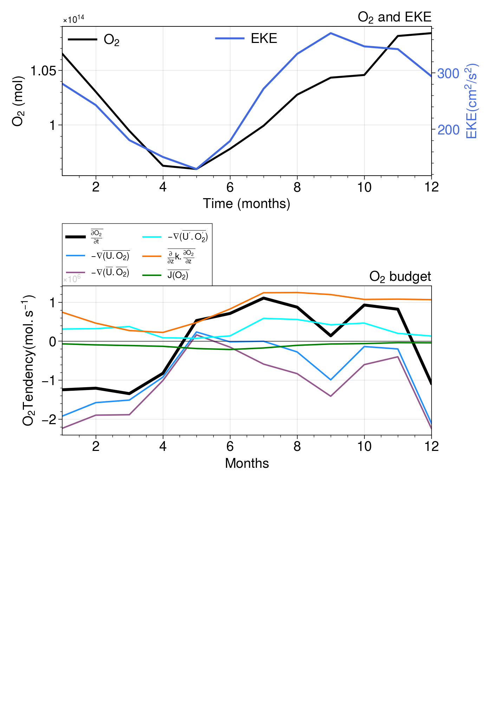
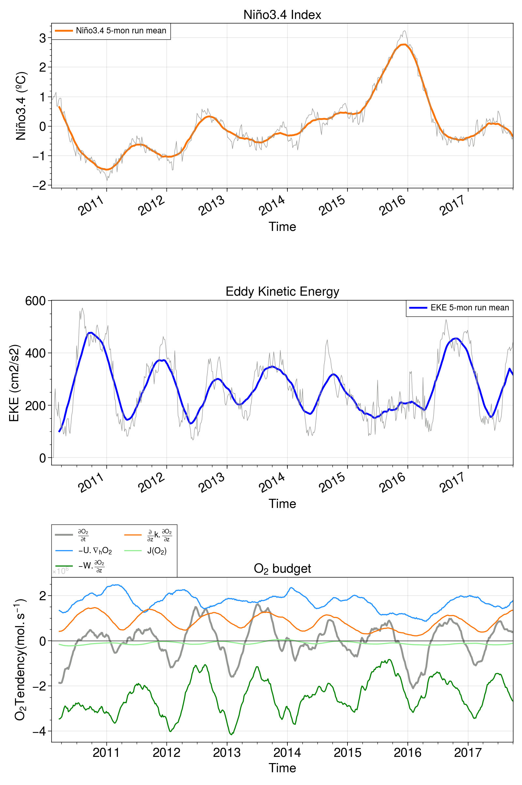

Spin up Dask Cluster/Client
Contents
This notebook analyzes the O\(_2\) budget from MITgcm+BLING output. Dissolved oxygen in the ocean’s interior is simulated following:
\[
\frac{\partial{O_2}}{\partial{t}}= \underbrace{- \frac{\partial{U.O_2}}{\partial{x}} -\frac{\partial{V.O_2}}{\partial{y}}}_\text{Lateral Advection}
- \overbrace{\frac{\partial{W.O_2}}{\partial{z}}}^\text{Vertical Advection}
+ \underbrace{A_h.\nabla^2{O_2}}_\text{Lateral Mixing}
+\overbrace{\frac{\partial{}}{\partial{z}}k.\frac{\partial{O_2}}{\partial{z}}}^\text{Vertical Mixing}
+ \underbrace{ J(O_2) }_\text{Sources - Sinks}
\]
%load_ext autoreload
%autoreload 2
%matplotlib inline
import warnings
warnings.simplefilter("ignore") # Silence warnings
import xarray as xr
import numpy as np
from tqdm import tqdm
import matplotlib.colors as colors
import matplotlib.ticker as mticker
import matplotlib.patches as patches
import cmocean
import cartopy
import cartopy.crs as ccrs
from cartopy import util
from cartopy.mpl.gridliner import LONGITUDE_FORMATTER, LATITUDE_FORMATTER
import cartopy.feature as cft
import proplot
# from xmovie import *
import matplotlib.pyplot as plt
from utils import *
from xgcm import Grid
plt.rcParams["figure.facecolor"] = 'white'
The autoreload extension is already loaded. To reload it, use:
%reload_ext autoreload
Spin up Dask Cluster/Client#
C=CLSTR(1,59,209,36)
C
Client
Client-226c1c42-95c5-11ec-a4cf-3cecef1acb68
| Connection method: Cluster object | Cluster type: dask_jobqueue.PBSCluster |
| Dashboard: https://jupyterhub.hpc.ucar.edu/stable/user/yeddebba/proxy/37973/status |
Cluster Info
PBSCluster
c4dabcb0
| Dashboard: https://jupyterhub.hpc.ucar.edu/stable/user/yeddebba/proxy/37973/status | Workers: 0 |
| Total threads: 0 | Total memory: 0 B |
Scheduler Info
Scheduler
Scheduler-3936931b-db29-46ce-94cc-7c052d1622b4
| Comm: tcp://10.12.206.46:44660 | Workers: 0 |
| Dashboard: https://jupyterhub.hpc.ucar.edu/stable/user/yeddebba/proxy/37973/status | Total threads: 0 |
| Started: Just now | Total memory: 0 B |
Workers
def plot_depth_section(ax,x,z, var,cntf,lev,clr,units,title,coords,fs,fsx,lw,alp,cb_on,profile):
if cntf==True:
cs= ax.contourf(x,z,var,levels=lev,cmap=clr,extend='both')
if cb_on==True:
cb = plt.colorbar(cs, ax=ax, orientation='vertical', extend='both',pad=0.02)#, aspect=20)
# cb.ax.set_title(units,fontsize=fs-1,pad=0.2)
cb.set_label(units, rotation=0,size=fs-1,position=(1,1.06))
cb.ax.tick_params(labelsize=fs-1)
cb.ax.minorticks_off()
if cntf==False: cs= ax.contour(x,z,var,colors=clr,linewidths=lw,levels=lev,alpha=alp)
ax.set_title(title,loc='center',fontsize=fs)
ax.set_ylim(coords[0]); ax.set_xlim(coords[1]); ax.minorticks_on();
ax.set_ylabel('Depth (m)',fontsize=fs-2);
ax.set_aspect('auto')
if profile=='lon': ax.set_xlabel('Latitude ($^{o}$N)',fontsize=fs-2)
if profile=='lat': ax.set_xlabel('Longitude ($^{o}$E)',fontsize=fs-2)
ax.set_title(title,pad=0.01,fontsize=fs, loc='center');
ax.tick_params(axis='both', labelsize=fs)
return ax
def plot_cmap(ax,lon,lat, var,vmn, vmx, stp, clr,units,title,coor,fs,fsx,lon_lab,lat_lab):
ax.set_extent(coor,crs=cartopy.crs.PlateCarree())
pc= ax.contourf(lon,lat,var,np.arange(vmn,vmx,stp),cmap=clr,transform=ccrs.PlateCarree(), extend='both') #,
land = ax.add_feature(cartopy.feature.NaturalEarthFeature('physical', 'land', '10m',linewidth=0.1, edgecolor='black', facecolor='grey'))
cb = plt.colorbar(pc, ax=ax, orientation='vertical', extend='both',pad=0.02)#, aspect=20)
cb.set_label(units, rotation=0,size=fs-1,position=(1.0,1.06))
cb.ax.minorticks_off()
cb.ax.tick_params(labelsize=fs)
ax.set_aspect('auto')
ax.set_title(title,loc='center',fontsize=fs)
gl=ax.gridlines(draw_labels=True)
gl.xlabel_style = {'size': fsx, 'color': 'black'}; gl.ylabel_style = {'size': fsx, 'color': 'black'};
gl.xlabels_top = False; gl.ylabels_right= False; gl.xlines = False; gl.ylines = False
gl.xlocator = mticker.FixedLocator(lon_lab); gl.ylocator = mticker.FixedLocator(lat_lab)
gl.xformatter = LONGITUDE_FORMATTER ; gl.yformatter = LATITUDE_FORMATTER
return ax
### XGCM Commands:
# grid.integrate(dst.TRAC03.isel(time=0), 'Z')
# grid.integrate(dst.TRAC03.isel(time=0), ['X', 'Y'])
# grid.integrate(dsl.TRAC03, ['X', 'Y', 'Z'])
# grid.average(dst.TRAC03.isel(time=0), ['Z'])
# grid.average(dsv.UVEL.isel(time=0), ['X','Y'])
# grid.cumint(-grid.integrate(dsv.UVEL.isel(time=0),'Z'),'Y', boundary='fill')
# # grid.cumsum( -grid.integrate(dsv.UVEL.isel(time=4),'Z') * dsv.dyG, 'Y', boundary='fill')
# uvel_l = grid.interp(dsv.UVEL,'Z')
# grid.derivative(uvel_l.isel(time=0),'Z')
# # grid.diff( uvel_l, 'Z' ) / ds.drW
def mitgcm_grid(dsr):
dsr['drW'] = dsr.hFacW * dsr.drF #vertical cell size at u point
dsr['drS'] = dsr.hFacS * dsr.drF #vertical cell size at v point
dsr['drC'] = dsr.hFacC * dsr.drF #vertical cell size at tracer point
metrics = {
('X',): ['dxC', 'dxG'], # X distances
('Y',): ['dyC', 'dyG'], # Y distances
('Z',): ['drW', 'drS', 'drC'], # Z distances
('X', 'Y'): ['rA', 'rAs', 'rAw'] # Areas
}
grid = Grid(dsr, metrics=metrics,periodic=False)
return grid
Load Monthly Mean Budget Terms and take the longterm mean#
N=5; S=-5
W=160; E=100
Du=-50; Dl=-150; Ds=0
rho_u=1024.0; rho_d=1026.0
dst=xr.open_mfdataset('/glade/scratch/yeddebba/Mesoscale/TPOSE/MITgcm_BLING_BUDGET_2010_2013_5DAY/budgets/monthly/*O2_monthly.nc')
dst['rVOL']=dst.drF*dst.rA*dst.hFacC
dsw=dst.mean('month')
dsw
<xarray.Dataset>
Dimensions: (Z: 30, YC: 204, XC: 1128)
Coordinates:
* Z (Z) float32 -2.5 -7.5 -12.5 -17.5 ... -448.2 -490.9 -538.7 -591.7
* YC (YC) float32 -16.92 -16.75 -16.58 -16.42 ... 16.58 16.75 16.92
* XC (XC) float32 104.1 104.2 104.4 104.6 ... 291.4 291.6 291.8 291.9
rA (YC, XC) float32 dask.array<chunksize=(204, 1128), meta=np.ndarray>
Depth (YC, XC) float32 dask.array<chunksize=(204, 1128), meta=np.ndarray>
maskInC (YC, XC) int8 dask.array<chunksize=(204, 1128), meta=np.ndarray>
hFacC (Z, YC, XC) float32 dask.array<chunksize=(30, 204, 1128), meta=np.ndarray>
maskC (Z, YC, XC) int8 dask.array<chunksize=(30, 204, 1128), meta=np.ndarray>
maskCtrlC (Z, YC, XC) int8 dask.array<chunksize=(30, 204, 1128), meta=np.ndarray>
drF (Z) float32 dask.array<chunksize=(30,), meta=np.ndarray>
rhoRef (Z) float32 dask.array<chunksize=(30,), meta=np.ndarray>
Data variables: (12/21)
U_O2 (Z, YC, XC) float32 dask.array<chunksize=(30, 204, 1128), meta=np.ndarray>
V_O2 (Z, YC, XC) float32 dask.array<chunksize=(30, 204, 1128), meta=np.ndarray>
W_O2 (Z, YC, XC) float32 dask.array<chunksize=(30, 204, 1128), meta=np.ndarray>
DIVm (Z, YC, XC) float32 dask.array<chunksize=(30, 204, 1128), meta=np.ndarray>
U_dO2 (Z, YC, XC) float32 dask.array<chunksize=(30, 204, 1128), meta=np.ndarray>
V_dO2 (Z, YC, XC) float32 dask.array<chunksize=(30, 204, 1128), meta=np.ndarray>
... ...
adv_v_O2 (Z, YC, XC) float32 dask.array<chunksize=(30, 204, 1128), meta=np.ndarray>
bio_O2 (Z, YC, XC) float32 dask.array<chunksize=(30, 204, 1128), meta=np.ndarray>
dif_v_O2 (Z, YC, XC) float32 dask.array<chunksize=(30, 204, 1128), meta=np.ndarray>
surf_O2 (Z, YC, XC) float32 dask.array<chunksize=(30, 204, 1128), meta=np.ndarray>
tend_O2 (Z, YC, XC) float32 dask.array<chunksize=(30, 204, 1128), meta=np.ndarray>
rVOL (Z, YC, XC) float32 dask.array<chunksize=(30, 204, 1128), meta=np.ndarray>xarray.Dataset
- Z: 30
- YC: 204
- XC: 1128
- Z(Z)float32-2.5 -7.5 -12.5 ... -538.7 -591.7
- standard_name :
- depth
- long_name :
- vertical coordinate of cell center
- units :
- m
- positive :
- down
- axis :
- Z
array([ -2.5 , -7.5 , -12.5 , -17.5 , -23. , -29.5 , -37. , -45.5 , -55. , -65.5 , -76.9143 , -89.25715, -102.82855, -117.82855, -134.25716, -152.1143 , -171.4 , -192.1143 , -214.25716, -237.82855, -262.82855, -289.25714, -317.1143 , -346.4 , -376.4 , -409.73334, -448.23334, -490.9 , -538.73334, -591.73334], dtype=float32) - YC(YC)float32-16.92 -16.75 ... 16.75 16.92
- standard_name :
- latitude
- long_name :
- latitude
- units :
- degrees_north
- coordinate :
- YC XC
- axis :
- Y
array([-16.916666, -16.75 , -16.583334, ..., 16.583334, 16.75 , 16.916666], dtype=float32) - XC(XC)float32104.1 104.2 104.4 ... 291.8 291.9
- standard_name :
- longitude
- long_name :
- longitude
- units :
- degrees_east
- coordinate :
- YC XC
- axis :
- X
array([104.083336, 104.25 , 104.416664, ..., 291.58334 , 291.75 , 291.91666 ], dtype=float32) - rA(YC, XC)float32dask.array<chunksize=(204, 1128), meta=np.ndarray>
- standard_name :
- cell_area
- long_name :
- cell area
- units :
- m2
- coordinate :
- YC XC
Array Chunk Bytes 898.88 kiB 898.88 kiB Shape (204, 1128) (204, 1128) Count 40 Tasks 1 Chunks Type float32 numpy.ndarray - Depth(YC, XC)float32dask.array<chunksize=(204, 1128), meta=np.ndarray>
- standard_name :
- ocean_depth
- long_name :
- ocean depth
- units :
- m
- coordinate :
- XC YC
Array Chunk Bytes 898.88 kiB 898.88 kiB Shape (204, 1128) (204, 1128) Count 40 Tasks 1 Chunks Type float32 numpy.ndarray - maskInC(YC, XC)int8dask.array<chunksize=(204, 1128), meta=np.ndarray>
- standard_name :
- interior_2d_mask
- long_name :
- OBCS 2D interior mask at tracer location, zero beyond OB
- units :
Array Chunk Bytes 224.72 kiB 224.72 kiB Shape (204, 1128) (204, 1128) Count 35 Tasks 1 Chunks Type int8 numpy.ndarray - hFacC(Z, YC, XC)float32dask.array<chunksize=(30, 204, 1128), meta=np.ndarray>
- standard_name :
- cell_vertical_fraction
- long_name :
- vertical fraction of open cell
Array Chunk Bytes 26.33 MiB 26.33 MiB Shape (30, 204, 1128) (30, 204, 1128) Count 40 Tasks 1 Chunks Type float32 numpy.ndarray - maskC(Z, YC, XC)int8dask.array<chunksize=(30, 204, 1128), meta=np.ndarray>
- standard_name :
- sea_binary_mask_at_t_location
- long_name :
- mask denoting wet point at center
Array Chunk Bytes 6.58 MiB 6.58 MiB Shape (30, 204, 1128) (30, 204, 1128) Count 35 Tasks 1 Chunks Type int8 numpy.ndarray - maskCtrlC(Z, YC, XC)int8dask.array<chunksize=(30, 204, 1128), meta=np.ndarray>
- standard_name :
- ctrl_vector_3d_mask
- long_name :
- CTRL 3D mask where ctrl vector is active at tracer location
- units :
Array Chunk Bytes 6.58 MiB 6.58 MiB Shape (30, 204, 1128) (30, 204, 1128) Count 35 Tasks 1 Chunks Type int8 numpy.ndarray - drF(Z)float32dask.array<chunksize=(30,), meta=np.ndarray>
- standard_name :
- cell_z_size
- long_name :
- cell z size
- units :
- m
Array Chunk Bytes 120 B 120 B Shape (30,) (30,) Count 40 Tasks 1 Chunks Type float32 numpy.ndarray - rhoRef(Z)float32dask.array<chunksize=(30,), meta=np.ndarray>
- standard_name :
- reference_density_profile
- long_name :
- 1D, vertical reference density profile
- coordinate :
- Z
- units :
- kg m-3
Array Chunk Bytes 120 B 120 B Shape (30,) (30,) Count 40 Tasks 1 Chunks Type float32 numpy.ndarray
- U_O2(Z, YC, XC)float32dask.array<chunksize=(30, 204, 1128), meta=np.ndarray>
Array Chunk Bytes 26.33 MiB 26.33 MiB Shape (30, 204, 1128) (30, 204, 1128) Count 4 Tasks 1 Chunks Type float32 numpy.ndarray - V_O2(Z, YC, XC)float32dask.array<chunksize=(30, 204, 1128), meta=np.ndarray>
Array Chunk Bytes 26.33 MiB 26.33 MiB Shape (30, 204, 1128) (30, 204, 1128) Count 4 Tasks 1 Chunks Type float32 numpy.ndarray - W_O2(Z, YC, XC)float32dask.array<chunksize=(30, 204, 1128), meta=np.ndarray>
Array Chunk Bytes 26.33 MiB 26.33 MiB Shape (30, 204, 1128) (30, 204, 1128) Count 4 Tasks 1 Chunks Type float32 numpy.ndarray - DIVm(Z, YC, XC)float32dask.array<chunksize=(30, 204, 1128), meta=np.ndarray>
Array Chunk Bytes 26.33 MiB 26.33 MiB Shape (30, 204, 1128) (30, 204, 1128) Count 4 Tasks 1 Chunks Type float32 numpy.ndarray - U_dO2(Z, YC, XC)float32dask.array<chunksize=(30, 204, 1128), meta=np.ndarray>
Array Chunk Bytes 26.33 MiB 26.33 MiB Shape (30, 204, 1128) (30, 204, 1128) Count 4 Tasks 1 Chunks Type float32 numpy.ndarray - V_dO2(Z, YC, XC)float32dask.array<chunksize=(30, 204, 1128), meta=np.ndarray>
Array Chunk Bytes 26.33 MiB 26.33 MiB Shape (30, 204, 1128) (30, 204, 1128) Count 4 Tasks 1 Chunks Type float32 numpy.ndarray - O2_dW(Z, YC, XC)float32dask.array<chunksize=(30, 204, 1128), meta=np.ndarray>
Array Chunk Bytes 26.33 MiB 26.33 MiB Shape (30, 204, 1128) (30, 204, 1128) Count 4 Tasks 1 Chunks Type float32 numpy.ndarray - W_dO2(Z, YC, XC)float32dask.array<chunksize=(30, 204, 1128), meta=np.ndarray>
Array Chunk Bytes 26.33 MiB 26.33 MiB Shape (30, 204, 1128) (30, 204, 1128) Count 4 Tasks 1 Chunks Type float32 numpy.ndarray - DIVd(Z, YC, XC)float32dask.array<chunksize=(30, 204, 1128), meta=np.ndarray>
Array Chunk Bytes 26.33 MiB 26.33 MiB Shape (30, 204, 1128) (30, 204, 1128) Count 4 Tasks 1 Chunks Type float32 numpy.ndarray - DIVp(Z, YC, XC)float32dask.array<chunksize=(30, 204, 1128), meta=np.ndarray>
Array Chunk Bytes 26.33 MiB 26.33 MiB Shape (30, 204, 1128) (30, 204, 1128) Count 4 Tasks 1 Chunks Type float32 numpy.ndarray - DIVdp(Z, YC, XC)float32dask.array<chunksize=(30, 204, 1128), meta=np.ndarray>
Array Chunk Bytes 26.33 MiB 26.33 MiB Shape (30, 204, 1128) (30, 204, 1128) Count 4 Tasks 1 Chunks Type float32 numpy.ndarray - Up_dO2p(Z, YC, XC)float32dask.array<chunksize=(30, 204, 1128), meta=np.ndarray>
Array Chunk Bytes 26.33 MiB 26.33 MiB Shape (30, 204, 1128) (30, 204, 1128) Count 4 Tasks 1 Chunks Type float32 numpy.ndarray - Wp_dO2p(Z, YC, XC)float32dask.array<chunksize=(30, 204, 1128), meta=np.ndarray>
Array Chunk Bytes 26.33 MiB 26.33 MiB Shape (30, 204, 1128) (30, 204, 1128) Count 4 Tasks 1 Chunks Type float32 numpy.ndarray - TRAC03(Z, YC, XC)float32dask.array<chunksize=(30, 204, 1128), meta=np.ndarray>
Array Chunk Bytes 26.33 MiB 26.33 MiB Shape (30, 204, 1128) (30, 204, 1128) Count 4 Tasks 1 Chunks Type float32 numpy.ndarray - adv_h_O2(Z, YC, XC)float32dask.array<chunksize=(30, 204, 1128), meta=np.ndarray>
Array Chunk Bytes 26.33 MiB 26.33 MiB Shape (30, 204, 1128) (30, 204, 1128) Count 4 Tasks 1 Chunks Type float32 numpy.ndarray - adv_v_O2(Z, YC, XC)float32dask.array<chunksize=(30, 204, 1128), meta=np.ndarray>
Array Chunk Bytes 26.33 MiB 26.33 MiB Shape (30, 204, 1128) (30, 204, 1128) Count 4 Tasks 1 Chunks Type float32 numpy.ndarray - bio_O2(Z, YC, XC)float32dask.array<chunksize=(30, 204, 1128), meta=np.ndarray>
Array Chunk Bytes 26.33 MiB 26.33 MiB Shape (30, 204, 1128) (30, 204, 1128) Count 4 Tasks 1 Chunks Type float32 numpy.ndarray - dif_v_O2(Z, YC, XC)float32dask.array<chunksize=(30, 204, 1128), meta=np.ndarray>
Array Chunk Bytes 26.33 MiB 26.33 MiB Shape (30, 204, 1128) (30, 204, 1128) Count 4 Tasks 1 Chunks Type float32 numpy.ndarray - surf_O2(Z, YC, XC)float32dask.array<chunksize=(30, 204, 1128), meta=np.ndarray>
Array Chunk Bytes 26.33 MiB 26.33 MiB Shape (30, 204, 1128) (30, 204, 1128) Count 4 Tasks 1 Chunks Type float32 numpy.ndarray - tend_O2(Z, YC, XC)float32dask.array<chunksize=(30, 204, 1128), meta=np.ndarray>
Array Chunk Bytes 26.33 MiB 26.33 MiB Shape (30, 204, 1128) (30, 204, 1128) Count 4 Tasks 1 Chunks Type float32 numpy.ndarray - rVOL(Z, YC, XC)float32dask.array<chunksize=(30, 204, 1128), meta=np.ndarray>
Array Chunk Bytes 26.33 MiB 26.33 MiB Shape (30, 204, 1128) (30, 204, 1128) Count 125 Tasks 1 Chunks Type float32 numpy.ndarray
dsv=xr.open_mfdataset('/glade/scratch/yeddebba/Mesoscale/TPOSE/MITgcm_BLING_BUDGET_2010_2013_5DAY/budgets/variables_201?.nc',chunks={'time':10})
dsb=xr.open_mfdataset('/glade/scratch/yeddebba/Mesoscale/TPOSE/MITgcm_BLING_BUDGET_2010_2013_5DAY/budgets/budgets_201?.nc',chunks={'time':10})
EKE=xr.open_mfdataset('/glade/scratch/yeddebba/Mesoscale/TPOSE/MITgcm_BLING_BUDGET_2010_2013_5DAY/EKE_2010_2017.nc')['__xarray_dataarray_variable__']
dso=xr.open_mfdataset('/glade/scratch/yeddebba/Mesoscale/TPOSE/MITgcm_BLING_BUDGET_2010_2013_5DAY/budgets/rho_O2_5day_201?.nc')
O2_rho=xr.open_mfdataset('/glade/scratch/yeddebba/Mesoscale/TPOSE/MITgcm_BLING_BUDGET_2010_2013_5DAY/budgets/intergals/O2_24_26.nc')['__xarray_dataarray_variable__']
O2_rho
<xarray.DataArray '__xarray_dataarray_variable__' (time: 584)>
dask.array<open_dataset-fd164e11725706c79051abf94a3fd884__xarray_dataarray_variable__, shape=(584,), dtype=float32, chunksize=(584,), chunktype=numpy.ndarray>
Coordinates:
iter (time) int32 dask.array<chunksize=(584,), meta=np.ndarray>
* time (time) datetime64[ns] 2010-01-04 2010-01-09 ... 2017-12-28xarray.DataArray
'__xarray_dataarray_variable__'
- time: 584
- dask.array<chunksize=(584,), meta=np.ndarray>
Array Chunk Bytes 2.28 kiB 2.28 kiB Shape (584,) (584,) Count 2 Tasks 1 Chunks Type float32 numpy.ndarray - iter(time)int32dask.array<chunksize=(584,), meta=np.ndarray>
- standard_name :
- timestep
- long_name :
- model timestep number
Array Chunk Bytes 2.28 kiB 2.28 kiB Shape (584,) (584,) Count 2 Tasks 1 Chunks Type int32 numpy.ndarray - time(time)datetime64[ns]2010-01-04 ... 2017-12-28
- standard_name :
- time
- long_name :
- Time
- axis :
- T
array(['2010-01-04T00:00:00.000000000', '2010-01-09T00:00:00.000000000', '2010-01-14T00:00:00.000000000', ..., '2017-12-18T00:00:00.000000000', '2017-12-23T00:00:00.000000000', '2017-12-28T00:00:00.000000000'], dtype='datetime64[ns]')
Plot Longterm Mean Budget#
fig = plt.figure(figsize=(18,14),dpi=100)
fs=12; fsx=8
EE=-200.0; WW=-70.1; SS=-17.0; NN=17.1
coor=[EE,WW,SS,NN]; CL=215.0 # central longtiude
lon_lab=np.concatenate([np.arange(EE,WW,20)])
lat_lab=np.arange(SS+2,NN-1,5)
clr_o2='NegPos'
omz_clr='green'
odz_clr='lime'
VAR= [((dsw.tend_O2*dsw.rVOL).sel(Z=slice(Du,Dl)).sum('Z'))/(dsw.rVOL.sel(Z=slice(Du,Dl)).sum('Z')),
((-(dsw.adv_h_O2+dsw.adv_v_O2)*dsw.rVOL).sel(Z=slice(Du,Dl)).sum('Z'))/(dsw.rVOL.sel(Z=slice(Du,Dl)).sum('Z')),
((-dsw.DIVd*dsw.rVOL).sel(Z=slice(Du,Dl)).sum('Z'))/(dsw.rVOL.sel(Z=slice(Du,Dl)).sum('Z')),
(((-dsw.DIVdp)*dsw.rVOL).sel(Z=slice(Du,Dl)).sum('Z'))/(dsw.rVOL.sel(Z=slice(Du,Dl)).sum('Z')),
((-dsw.dif_v_O2*dsw.rVOL).sel(Z=slice(Du,Dl)).sum('Z'))/(dsw.rVOL.sel(Z=slice(Du,Dl)).sum('Z')),
((dsw.bio_O2*dsw.rVOL).sel(Z=slice(Du,Dl)).sum('Z'))/(dsw.rVOL.sel(Z=slice(Du,Dl)).sum('Z')),
]
units=['mol.m$^{-3}$.s$^{-1}$']
title=[r'$\overline{\frac{\partial{O_2}}{\partial{t}}}$ ',
r"$-\overline{U.\nabla{O_2}}$",
r'$-\overline{U}.\nabla{\overline{O_2}}$ ',
r"$-\overline{U'.\nabla{O_2'}}$",
r'$\overline{\frac{\partial{}}{\partial{z}}k.\frac{\partial{O_2}}{\partial{z}}}$ ',
r'$\overline{J(O_2)}$ ']
clrs=[clr_o2]
lmax=5e-9
lmin=-lmax
lstp=lmax*0.5e-1
gs = fig.add_gridspec(nrows=3, ncols=2, bottom=0.35,left=0.05, right=0.95, wspace=0.0, hspace=0.3)
rng=[0,1,2,3,4,5]
r=[0,0,1,1,2,2]
c=[0,1,0,1,0,1]
for i in tqdm(np.arange(0,6)):#len(VAR))):
ax = fig.add_subplot(gs[r[i], c[i]] ,projection=ccrs.PlateCarree())
ax = plot_cmap(ax,dsw.XC,dsw.YC, VAR[i],lmin, lmax, lstp,
clrs[0],units[0],title[i],coor,fs,fsx, lon_lab,lat_lab)
# (dv.UVEL).isel(z_t=15).plot.contour(colors='black',linewidths=0.7,levels=np.arange(-150,150,50))
ax.contour(dsw.XC,dsw.YC, dsw.TRAC03.isel(Z=15)*1e3,colors=omz_clr,linewidths=0.9,levels=np.arange(60,60.1,5))
ax.contour(dsw.XC,dsw.YC, dsw.TRAC03.isel(Z=15)*1e3,colors=odz_clr,linewidths=0.9,levels=np.arange(20,20.1,5))
if i==0:
ax.contour(dsw.XC,dsw.YC, dsw.TRAC03.isel(Z=15)*1e3,colors='black',linewidths=0.3,levels=np.arange(0,200.1,10))
gl=ax.gridlines(draw_labels=True)
gl.xlabel_style = {'size': fsx, 'color': 'black'}; gl.ylabel_style = {'size': fsx, 'color': 'black'};
gl.xlabels_top = False; gl.ylabels_right= False; gl.xlines = False; gl.ylines = False
gl.xlocator = mticker.FixedLocator(lon_lab); gl.ylocator = mticker.FixedLocator(lat_lab)
gl.xformatter = LONGITUDE_FORMATTER ; gl.yformatter = LATITUDE_FORMATTER
fig.tight_layout()
100%|██████████| 6/6 [01:04<00:00, 10.76s/it]
fig = plt.figure(figsize=(25,7),dpi=100,)
gs = fig.add_gridspec(nrows=2, ncols=3, left=0.05, right=0.95, wspace=0.2, hspace=0.4)
fs=14; fsx=8;
SS=-17; NN=17
tops=0. ; bots=500.;
coords=[[bots,tops],[SS,NN]]
clr_o2='NegPos'
omz_clr='green'
odz_clr='lime'
om_clr='blue'
var= [((dsw.tend_O2*dsw.rVOL).sel(XC=slice(360-W,360-E)).sum('XC'))/(dsw.rVOL.sel(XC=slice(360-W,360-E)).sum('XC')),
((-(dsw.adv_h_O2+dsw.adv_v_O2)*dsw.rVOL).sel(XC=slice(360-W,360-E)).sum('XC'))/(dsw.rVOL.sel(XC=slice(360-W,360-E)).sum('XC')),
((-(dsw.U_dO2+dsw.V_dO2+dsw.W_dO2)*dsw.rVOL).sel(XC=slice(360-W,360-E)).sum('XC'))/(dsw.rVOL.sel(XC=slice(360-W,360-E)).sum('XC')),
((-dsw.DIVdp)*dsw.rVOL).sel(XC=slice(360-W,360-E)).sum('XC')/(dsw.rVOL.sel(XC=slice(360-W,360-E)).sum('XC')),
((-dsw.dif_v_O2*dsw.rVOL).sel(XC=slice(360-W,360-E)).sum('XC'))/(dsw.rVOL.sel(XC=slice(360-W,360-E)).sum('XC')),
((dsw.bio_O2*dsw.rVOL).sel(XC=slice(360-W,360-E)).sum('XC'))/(dsw.rVOL.sel(XC=slice(360-W,360-E)).sum('XC')),
]
cntf= True ; cnt= False
units=['mol.m$^{-3}$.s$^{-1}$']
title=[r'$\overline{\frac{\partial{O_2}}{\partial{t}}}$ ',
r"$-\overline{U.\nabla{O_2}}$",
r'$-\overline{U}.\nabla{\overline{O_2}}$ ',
r"$-\overline{U'.\nabla{O_2'}}$",
r'$\overline{\frac{\partial{}}{\partial{z}}k.\frac{\partial{O_2}}{\partial{z}}}$ ',
r'$\overline{J(O_2)}$ ']
clr=[clr_o2]
lw=0.5; alp=1;cb_on=True
lo = -3e-9; hi = -lo; hi2 = -lo; dsc = -lo*0.5e-1
y=dsw.YC
z= dsw.Z*-1
i=[0,0,0,1,1,1]; j=[0,1,2,2,1,0]
for k in tqdm(np.arange(0,6)):#len(VAR))):
ax = fig.add_subplot(gs[i[k],j[k]])
cax= plot_depth_section(ax,y,z,var[k],cntf,np.arange(lo, hi+dsc, dsc),
clr[0],units[0],title[k],coords,fs,fsx,lw,alp,cb_on,'lon')
pch= cax.contour(y, z,dsw.TRAC03.sel(XC=slice(360-W,360-E)).mean({'XC'})*1e3,
colors='black', alpha=0.5,linewidths=0.3, levels = np.arange(0,300.1,10))
pch= cax.contour(y, z,dsw.TRAC03.sel(XC=slice(360-W,360-E)).mean({'XC'})*1e3,
colors=om_clr, alpha=1, linewidths=1, levels = np.arange(200,200.1,0.1))
pch= cax.contour(y, z,dsw.TRAC03.sel(XC=slice(360-W,360-E)).mean({'XC'})*1e3,
colors=omz_clr, alpha=1, linewidths=1, levels = np.arange(60,60.1,0.1))
# pch= cax.contour(y, z,dsw.TRAC03.sel(XC=slice(360-W,360-E)).mean({'XC'})*1e3,
# colors=odz_clr, alpha=1, linewidths=1, levels = np.arange(20,20.1,0.1))
fig.tight_layout
100%|██████████| 6/6 [00:31<00:00, 5.25s/it]
<bound method Figure.tight_layout of <Figure size 2500x700 with 12 Axes>>
fig = plt.figure(figsize=(20,10),dpi=100,)
gs = fig.add_gridspec(nrows=3, ncols=3, left=0.05, right=0.95, wspace=0.15, hspace=0.5)
# fig = plt.figure(figsize=(25,7),dpi=100,)
# gs = fig.add_gridspec(nrows=2, ncols=3, left=0.05, right=0.95, wspace=0.2, hspace=0.4)
fs=14; fsx=8;
SS=-17; NN=17
tops=0. ; bots=500.;
coords=[[bots,tops],[SS,NN]]
clr_o2='NegPos'
omz_clr='green'
odz_clr='lime'
om_clr='blue'
var= [((dsw.tend_O2*dsw.rVOL).sel(XC=slice(360-W,360-E)).sum('XC'))/(dsw.rVOL.sel(XC=slice(360-W,360-E)).sum('XC')),
((-(dsw.adv_h_O2+dsw.adv_v_O2)*dsw.rVOL).sel(XC=slice(360-W,360-E)).sum('XC'))/(dsw.rVOL.sel(XC=slice(360-W,360-E)).sum('XC')),
((-(dsw.DIVd)*dsw.rVOL).sel(XC=slice(360-W,360-E)).sum('XC'))/(dsw.rVOL.sel(XC=slice(360-W,360-E)).sum('XC')),
((-(dsw.U_dO2)*dsw.rVOL).sel(XC=slice(360-W,360-E)).sum('XC'))/(dsw.rVOL.sel(XC=slice(360-W,360-E)).sum('XC')),
((-(dsw.V_dO2)*dsw.rVOL).sel(XC=slice(360-W,360-E)).sum('XC'))/(dsw.rVOL.sel(XC=slice(360-W,360-E)).sum('XC')),
((-(dsw.W_dO2)*dsw.rVOL).sel(XC=slice(360-W,360-E)).sum('XC'))/(dsw.rVOL.sel(XC=slice(360-W,360-E)).sum('XC')),
]
cntf= True ; cnt= False
units=['mol.m$^{-3}$.s$^{-1}$']
title=[r'$\overline{\frac{\partial{O_2}}{\partial{t}}}$ ',
r"$-\overline{U.\nabla{O_2}}$",
r'$-\overline{U}.\nabla{\overline{O_2}}$ ',
r'$-\overline{u}.\overline{\frac{\partial{O_2}}{\partial{x}}}$ ',
r'$-\overline{v}.\overline{\frac{\partial{O_2}}{\partial{y}}}$ ',
r'$-\overline{w}.\overline{\frac{\partial{O_2}}{\partial{z}}}$ ',]
clr=[clr_o2]
lw=0.5; alp=1;cb_on=True
lo = -3e-9; hi = -lo; hi2 = -lo; dsc = -lo*0.5e-1
y=dsw.YC
z= dsw.Z*-1
i=[0,0,0,1,1,1]; j=[0,1,2,0,1,2]
for k in tqdm(np.arange(0,6)):#len(VAR))):
ax = fig.add_subplot(gs[i[k],j[k]])
cax= plot_depth_section(ax,y,z,var[k],cntf,np.arange(lo, hi+dsc, dsc),
clr[0],units[0],title[k],coords,fs,fsx,lw,alp,cb_on,'lon')
pch= cax.contour(y, z,dsw.TRAC03.sel(XC=slice(360-W,360-E)).mean({'XC'})*1e3,
colors='black', alpha=0.5,linewidths=0.3, levels = np.arange(0,300.1,10))
pch= cax.contour(y, z,dsw.TRAC03.sel(XC=slice(360-W,360-E)).mean({'XC'})*1e3,
colors=om_clr, alpha=1, linewidths=1, levels = np.arange(200,200.1,0.1))
pch= cax.contour(y, z,dsw.TRAC03.sel(XC=slice(360-W,360-E)).mean({'XC'})*1e3,
colors=omz_clr, alpha=1, linewidths=1, levels = np.arange(60,60.1,0.1))
# pch= cax.contour(y, z,dsw.TRAC03.sel(XC=slice(360-W,360-E)).mean({'XC'})*1e3,
# colors=odz_clr, alpha=1, linewidths=1, levels = np.arange(20,20.1,0.1))
fig.tight_layout
100%|██████████| 6/6 [00:33<00:00, 5.58s/it]
<bound method Figure.tight_layout of <Figure size 2000x1000 with 12 Axes>>
Plot Seasonal Cycle#
do=((dst*dsw.rVOL).sel(XC=slice(360-W,360-E)).sel(YC=slice(S,N)).sel(Z=slice(Du,Dl)).sum({'XC','YC','Z'})).compute()
dswz=(((dst*dsw.rVOL).sel(XC=slice(360-W,360-E)).sel(YC=slice(S,N)).sum({'XC','YC'}))/((dsw.rVOL).sel(XC=slice(360-W,360-E)).sel(YC=slice(S,N)).sum({'XC','YC'}))).compute()
Uz=((dsv.UVEL).sel(XG=slice(360-W,360-E)).sel(YC=slice(S,N)).mean({'XG','YC'}))
Uzm=Uz.groupby('time.month').mean(dim='time').compute()
Vz=((dsv.VVEL).sel(XC=slice(360-W,360-E)).sel(YG=slice(S,N)).mean({'XC','YG'}))
Vzm=Vz.groupby('time.month').mean(dim='time').compute()
Wz=((dsv.WVEL).sel(XC=slice(360-W,360-E)).sel(YC=slice(S,N)).mean({'XC','YC'}))
Wzm=Wz.groupby('time.month').mean(dim='time').compute()
EKE_m=((EKE*dsw.rA).sel(XC=slice(360-W,360-E)).sel(YC=slice(S,N)).sum({'XC','YC'}))/(dsw.rA.sel(XC=slice(360-W,360-E)).sel(YC=slice(S,N)).sum({'XC','YC'}))
EKE_mn=EKE_m.groupby('time.month').mean(dim='time').compute()
EKEz_m=((EKE*dsw.rA).sel(XC=slice(360-W,360-E)).sum({'XC'}))/(dsw.rA.sel(XC=slice(360-W,360-E)).sum({'XC'}))
EKEz_mn=EKEz_m.groupby('time.month').mean(dim='time').compute()
fig = plt.figure(figsize=(20,10),dpi=100,)
gs = fig.add_gridspec(nrows=3, ncols=3, left=0.05, right=0.95, wspace=0.15, hspace=0.5)
fs=14; fsx=8;
SS=-17; NN=17
tops=0. ; bots=500.;
coords=[[bots,tops],[SS,NN]]
clr_o2='NegPos'
omz_clr='green'
odz_clr='lime'
om_clr='blue'
var= [dswz.tend_O2,
-dswz.adv_h_O2-dswz.adv_v_O2,
-dswz.DIVd,
-dswz.DIVdp,
-dswz.dif_v_O2,
dswz.bio_O2,
]
cntf= True ; cnt= False
units=['mol.m$^{-3}$.s$^{-1}$']
title=[r'$\overline{\frac{\partial{O_2}}{\partial{t}}}$ ',
r"$-\overline{U.\nabla{O_2}}$",
r'$-\overline{U}.\nabla{\overline{O_2}}$ ',
r"$-\overline{U'.\nabla{O_2'}}$",
r'$\overline{\frac{\partial{}}{\partial{z}}k.\frac{\partial{O_2}}{\partial{z}}}$ ',
r'$\overline{J(O_2)}$ ']
clr=[clr_o2]
lw=0.5; alp=1;cb_on=True
lo = -3e-9; hi = -lo; hi2 = -lo; dsc = -lo*0.3e-1
y=dswz.month
z= dswz.Z*-1
i=[0,0,0,1,1,1]; j=[0,1,2,2,1,0]
for k in tqdm(np.arange(0,6)):#len(VAR))):
ax = fig.add_subplot(gs[i[k],j[k]])
cs= ax.contourf(y,z,var[k].transpose(),levels=np.arange(lo, hi+dsc, dsc),cmap=clr[0],extend='both')
cb = plt.colorbar(cs, ax=ax, orientation='vertical', extend='both',pad=0.02)#, aspect=20)
cb.set_label(units[0], rotation=0,size=fs-1,position=(1,1.06))
cb.ax.tick_params(labelsize=fs-1)
cb.ax.minorticks_off()
# cs= ax.contour(y,z,dso.transpose()*1e3,colors='k',linewidths=lw,alpha=alp)
ax.set_ylim(coords[0]); ax.minorticks_on();
# ax.set_xlim(coords[1]);
ax.set_ylabel('Depth (m)',fontsize=fs-2);
ax.set_aspect('auto')
ax.set_xlabel('Months',fontsize=fs-2)
ax.tick_params(axis='both', labelsize=fs)
ax.set_title(title[k],loc='center',fontsize=fs)
fig.tight_layout
ax = fig.add_subplot(gs[2,0])
cs= ax.contourf(y,z,Uzm.transpose(),levels=np.arange(-0.3,0.3,0.01),cmap=clr[0],extend='both')
cb = plt.colorbar(cs, ax=ax, orientation='vertical', extend='both',pad=0.02)#, aspect=20)
cb.set_label('m/s', rotation=0,size=fs-1,position=(1,1.06))
cb.ax.tick_params(labelsize=fs-1)
cb.ax.minorticks_off()
ax.set_ylim(coords[0]); ax.minorticks_on();
ax.set_ylabel('Depth (m)',fontsize=fs-2);
ax.set_aspect('auto')
ax.set_xlabel('Months',fontsize=fs-2)
ax.tick_params(axis='both', labelsize=fs)
ax.set_title('$\overline{u}$',loc='center',fontsize=fs)
ax = fig.add_subplot(gs[2,1])
cs= ax.contourf(y,-Wzm.Zl,-Wzm.transpose(),levels=np.arange(-4.5e-6,4.5e-6,0.05e-6),cmap=clr[0],extend='both') #
cb = plt.colorbar(cs, ax=ax, orientation='vertical', extend='both',pad=0.02)#, aspect=20)
cb.set_label('m/s', rotation=0,size=fs-1,position=(1,1.06))
cb.ax.tick_params(labelsize=fs-1)
cb.ax.minorticks_off()
ax.set_ylim(coords[0]); ax.minorticks_on();
ax.set_ylabel('Depth (m)',fontsize=fs-2);
ax.set_aspect('auto')
ax.set_xlabel('Months',fontsize=fs-2)
ax.tick_params(axis='both', labelsize=fs)
ax.set_title('$\overline{w}$',loc='center',fontsize=fs)
ax = fig.add_subplot(gs[2,2])
cs= ax.contourf(EKEz_mn.month,EKEz_mn.YC,EKEz_mn.transpose()*1e4,levels=np.arange(0,0.6e3,0.01e3),cmap='glacial',extend='both') #
cb = plt.colorbar(cs, ax=ax, orientation='vertical', extend='both',pad=0.02)#, aspect=20)
cb.set_label('cm2/s2', rotation=0,size=fs-1,position=(1,1.06))
cb.ax.tick_params(labelsize=fs-1)
cb.ax.minorticks_off()
# ax.set_ylim(coords[0]); ax.minorticks_on();
ax.set_ylabel('Latitude (ºN)',fontsize=fs-2);
ax.set_aspect('auto')
ax.set_xlabel('Months',fontsize=fs-2)
ax.tick_params(axis='both', labelsize=fs)
ax.set_title('$\overline{EKE}$',loc='center',fontsize=fs)
100%|██████████| 6/6 [00:00<00:00, 7.30it/s]
Text(0.5, 1.0, '$\\overline{EKE}$')
fig = plt.figure(figsize=(20,10),dpi=100,)
gs = fig.add_gridspec(nrows=3, ncols=3, left=0.05, right=0.95, wspace=0.15, hspace=0.5)
fs=14; fsx=8;
SS=-17; NN=17
tops=0. ; bots=500.;
coords=[[bots,tops],[SS,NN]]
clr_o2='NegPos'
omz_clr='green'
odz_clr='lime'
om_clr='blue'
var= [dswz.tend_O2,
-dswz.adv_h_O2-dswz.adv_v_O2,
-dswz.DIVd,
-dswz.U_dO2,
-dswz.V_dO2,
-dswz.W_dO2,]
cntf= True ; cnt= False
units=['mol.m$^{-3}$.s$^{-1}$']
title=[r'$\overline{\frac{\partial{O_2}}{\partial{t}}}$ ',
r"$-\overline{U.\nabla{O_2}}$",
r'$-\overline{U}.\nabla{\overline{O_2}}$ ',
r'$-\overline{u}.\overline{\frac{\partial{O_2}}{\partial{x}}}$ ',
r'$-\overline{v}.\overline{\frac{\partial{O_2}}{\partial{y}}}$ ',
r'$-\overline{w}.\overline{\frac{\partial{O_2}}{\partial{z}}}$ ',]
clr=[clr_o2]
lw=0.5; alp=1;cb_on=True
lo = -3e-9; hi = -lo; hi2 = -lo; dsc = -lo*0.3e-1
y=dswz.month
z= dswz.Z*-1
i=[0,0,0,1,1,1]; j=[0,1,2,0,1,2]
for k in tqdm(np.arange(0,6)):#len(VAR))):
ax = fig.add_subplot(gs[i[k],j[k]])
cs= ax.contourf(y,z,var[k].transpose(),levels=np.arange(lo, hi+dsc, dsc),cmap=clr[0],extend='both')
cb = plt.colorbar(cs, ax=ax, orientation='vertical', extend='both',pad=0.02)#, aspect=20)
cb.set_label(units[0], rotation=0,size=fs-1,position=(1,1.06))
cb.ax.tick_params(labelsize=fs-1)
cb.ax.minorticks_off()
# cs= ax.contour(y,z,dso.transpose()*1e3,colors='k',linewidths=lw,alpha=alp)
ax.set_ylim(coords[0]); ax.minorticks_on();
# ax.set_xlim(coords[1]);
ax.set_ylabel('Depth (m)',fontsize=fs-2);
ax.set_aspect('auto')
ax.set_xlabel('Months',fontsize=fs-2)
ax.tick_params(axis='both', labelsize=fs)
ax.set_title(title[k],loc='center',fontsize=fs)
fig.tight_layout
ax = fig.add_subplot(gs[2,0])
cs= ax.contourf(y,z,Uzm.transpose(),levels=np.arange(-0.3,0.3,0.01),cmap=clr[0],extend='both')
cb = plt.colorbar(cs, ax=ax, orientation='vertical', extend='both',pad=0.02)#, aspect=20)
cb.set_label('m/s', rotation=0,size=fs-1,position=(1,1.06))
cb.ax.tick_params(labelsize=fs-1)
cb.ax.minorticks_off()
ax.set_ylim(coords[0]); ax.minorticks_on();
ax.set_ylabel('Depth (m)',fontsize=fs-2);
ax.set_aspect('auto')
ax.set_xlabel('Months',fontsize=fs-2)
ax.tick_params(axis='both', labelsize=fs)
ax.set_title('$\overline{u}$',loc='center',fontsize=fs)
ax = fig.add_subplot(gs[2,1])
cs= ax.contourf(y,z,Vzm.transpose(),levels=np.arange(-0.05,0.05,0.001),cmap=clr[0],extend='both')
cb = plt.colorbar(cs, ax=ax, orientation='vertical', extend='both',pad=0.02)#, aspect=20)
cb.set_label('m/s', rotation=0,size=fs-1,position=(1,1.06))
cb.ax.tick_params(labelsize=fs-1)
cb.ax.minorticks_off()
ax.set_ylim(coords[0]); ax.minorticks_on();
ax.set_ylabel('Depth (m)',fontsize=fs-2);
ax.set_aspect('auto')
ax.set_xlabel('Months',fontsize=fs-2)
ax.tick_params(axis='both', labelsize=fs)
ax.set_title('$\overline{v}$',loc='center',fontsize=fs)
ax = fig.add_subplot(gs[2,2])
cs= ax.contourf(y,-Wzm.Zl,-Wzm.transpose(),levels=np.arange(-4.5e-6,4.5e-6,0.05e-6),cmap=clr[0],extend='both') #
cb = plt.colorbar(cs, ax=ax, orientation='vertical', extend='both',pad=0.02)#, aspect=20)
cb.set_label('m/s', rotation=0,size=fs-1,position=(1,1.06))
cb.ax.tick_params(labelsize=fs-1)
cb.ax.minorticks_off()
ax.set_ylim(coords[0]); ax.minorticks_on();
ax.set_ylabel('Depth (m)',fontsize=fs-2);
ax.set_aspect('auto')
ax.set_xlabel('Months',fontsize=fs-2)
ax.tick_params(axis='both', labelsize=fs)
ax.set_title('$\overline{w}$',loc='center',fontsize=fs)
100%|██████████| 6/6 [00:00<00:00, 13.06it/s]
Text(0.5, 1.0, '$\\overline{w}$')
fig = plt.figure(figsize=(7,10),dpi=100, facecolor='white')
fs=14
gs2 = fig.add_gridspec(nrows=3, ncols=1)#, top=0.3, left=0.38, right=0.95, wspace=0.4, hspace=0.2)
ax = fig.add_subplot(gs2[0,0])
pc=ax.plot(dst.month,do.TRAC03,color='black', Linewidth=2,label='O$_2$')
ax.set_xlim([0., 13.])
ax.minorticks_on()
ax.set_xlabel('Time (months)',fontsize=fs)
ax.xaxis.set_ticks_position('bottom')
ax.set_ylabel(r'O$_2$ (mol)',fontsize=fs)
ax.set_title(r'O$_2$ and EKE',fontsize=fs,loc='right')
ax.tick_params(axis='both', which='major', labelsize=fs)
plt.legend(loc='upper left',fontsize=fs,frameon=False)
ax2 = ax.twinx()
color = 'royalblue'
ax2.set_ylabel('EKE(cm$^2$/s$^2$)', color=color,fontsize=fs)
ax2.plot(dst.month,EKE_mn*1e4,color=color,Linewidth=2,label='EKE')
ax2.tick_params(axis='y', labelcolor=color)
ax2.tick_params(axis='both', which='major', labelsize=fs)
ax2.grid(False)
plt.xlim(1,12)
plt.legend(loc='upper center',fontsize=fs,frameon=False)
VARS=[do.tend_O2,
-do.adv_h_O2-do.adv_v_O2,
-do.DIVd,
-do.DIVdp,
-do.dif_v_O2,
do.bio_O2,]
title=[r' $\overline{\frac{\partial{O_2}}{\partial{t}}}$ ',
r' $-\nabla{\overline{(U.O_2)}}$ ',
r' $-\nabla{(\overline{U}.\overline{O_2})}$ ',
r" $-\nabla{(\overline{U'.O_2'})}$",
r' $\overline{\frac{\partial{}}{\partial{z}}k.\frac{\partial{O_2}}{\partial{z}}}$ ',
r' $\overline{J(O_2)}$ ',]
clr=['black','dodgerblue','purple','cyan','orange','green']#
ax = fig.add_subplot(gs2[1,0])
i=0
for VAR in VARS:
if i==0: LWW=3
if i>0: LWW=1.5
ax.plot(dst.month,VAR,
label=str(title[i]), color=clr[i],lw=LWW)
i+=1
ax.legend(bbox_to_anchor=(0, 1), loc='lower left', ncol=2)
ax.set_title('O$_2$ budget',size=14,loc='right')# integrated over '+str(abs(Wi))+'W-'+str(abs(Ei))+'W '+str(top)+'-'+str(bot)+'m')
ax.set_ylabel(r'O$_2 Tendency (mol.s^{-1})$',fontsize=14)
ax.set_xlabel('Months',fontsize=14)
ax.axhline(y=0.0, color='k',lw=0.5)
ax.minorticks_on()
ax.xaxis.set_ticks_position('bottom')
# ax.set_title('b) ',fontsize=fs+1,loc='left')
ax.tick_params(axis='both', which='major', labelsize=fs)
# plt.legend(loc='upper left',fontsize=fs,frameon=False)
plt.xlim(1,12)
plt.tight_layout()

Plot Interannual Variability in Budget Terms and ENSO Influence#
dsbd=((dsb*dsw.rVOL).sel(XC=slice(360-W,360-E)).sel(YC=slice(S,N)).sel(Z=slice(Du,Dl)).sum({'XC','YC','Z'})).compute()
dsbd
<xarray.Dataset>
Dimensions: (time: 584)
Coordinates:
iter (time) int32 105360 105600 105840 106080 ... 245040 245280 245520
* time (time) datetime64[ns] 2010-01-04 2010-01-09 ... 2017-12-28
Data variables:
adv_h_O2 (time) float32 -1.94e+06 -2.179e+06 ... -2.351e+06 -2.856e+06
adv_v_O2 (time) float32 2.19e+06 2.691e+06 ... 1.457e+06 2.583e+06
bio_O2 (time) float32 319.8 8.645e+03 2.939e+03 ... -3.476e+04 -3.839e+04
dif_h_O2 (time) float32 2.984e+03 3.961e+03 ... -3.585e+03 -2.236e+03
dif_v_O2 (time) float32 -6.899e+05 -7.536e+05 ... -8.389e+05 -9.017e+05
surf_O2 (time) float32 0.0 0.0 0.0 0.0 0.0 0.0 ... 0.0 0.0 0.0 0.0 0.0 0.0
tend_O2 (time) float32 4.374e+05 2.463e+05 ... 1.701e+06 1.139e+06
adv_huO2 (time) float32 -3.261e+06 -1.431e+06 ... -4.091e+06 -5.342e+06
adv_vwO2 (time) float32 3.511e+06 1.944e+06 ... 3.197e+06 5.068e+06
rVOL (time) float32 3.228e+24 3.228e+24 ... 3.228e+24 3.228e+24xarray.Dataset
- time: 584
- iter(time)int32105360 105600 ... 245280 245520
- standard_name :
- timestep
- long_name :
- model timestep number
array([105360, 105600, 105840, 106080, 106320, 106560, 106800, 107040, 107280, 107520, 107760, 108000, 108240, 108480, 108720, 108960, 109200, 109440, 109680, 109920, 110160, 110400, 110640, 110880, 111120, 111360, 111600, 111840, 112080, 112320, 112560, 112800, 113040, 113280, 113520, 113760, 114000, 114240, 114480, 114720, 114960, 115200, 115440, 115680, 115920, 116160, 116400, 116640, 116880, 117120, 117360, 117600, 117840, 118080, 118320, 118560, 118800, 119040, 119280, 119520, 119760, 120000, 120240, 120480, 120720, 120960, 121200, 121440, 121680, 121920, 122160, 122400, 122640, 122880, 123120, 123360, 123600, 123840, 124080, 124320, 124560, 124800, 125040, 125280, 125520, 125760, 126000, 126240, 126480, 126720, 126960, 127200, 127440, 127680, 127920, 128160, 128400, 128640, 128880, 129120, 129360, 129600, 129840, 130080, 130320, 130560, 130800, 131040, 131280, 131520, 131760, 132000, 132240, 132480, 132720, 132960, 133200, 133440, 133680, 133920, 134160, 134400, 134640, 134880, 135120, 135360, 135600, 135840, 136080, 136320, 136560, 136800, 137040, 137280, 137520, 137760, 138000, 138240, 138480, 138720, 138960, 139200, 139440, 139680, 139920, 140160, 140400, 140640, 140880, 141120, 141360, 141600, 141840, 142080, 142320, 142560, 142800, 143040, 143280, 143520, ... 209280, 209520, 209760, 210000, 210240, 210480, 210720, 210960, 211200, 211440, 211680, 211920, 212160, 212400, 212640, 212880, 213120, 213360, 213600, 213840, 214080, 214320, 214560, 214800, 215040, 215280, 215520, 215760, 216000, 216240, 216480, 216720, 216960, 217200, 217440, 217680, 217920, 218160, 218400, 218640, 218880, 219120, 219360, 219600, 219840, 220080, 220320, 220560, 220800, 221040, 221280, 221520, 221760, 222000, 222240, 222480, 222720, 222960, 223200, 223440, 223680, 223920, 224160, 224400, 224640, 224880, 225120, 225360, 225600, 225840, 226080, 226320, 226560, 226800, 227040, 227280, 227520, 227760, 228000, 228240, 228480, 228720, 228960, 229200, 229440, 229680, 229920, 230160, 230400, 230640, 230880, 231120, 231360, 231600, 231840, 232080, 232320, 232560, 232800, 233040, 233280, 233520, 233760, 234000, 234240, 234480, 234720, 234960, 235200, 235440, 235680, 235920, 236160, 236400, 236640, 236880, 237120, 237360, 237600, 237840, 238080, 238320, 238560, 238800, 239040, 239280, 239520, 239760, 240000, 240240, 240480, 240720, 240960, 241200, 241440, 241680, 241920, 242160, 242400, 242640, 242880, 243120, 243360, 243600, 243840, 244080, 244320, 244560, 244800, 245040, 245280, 245520], dtype=int32) - time(time)datetime64[ns]2010-01-04 ... 2017-12-28
- standard_name :
- time
- long_name :
- Time
- axis :
- T
array(['2010-01-04T00:00:00.000000000', '2010-01-09T00:00:00.000000000', '2010-01-14T00:00:00.000000000', ..., '2017-12-18T00:00:00.000000000', '2017-12-23T00:00:00.000000000', '2017-12-28T00:00:00.000000000'], dtype='datetime64[ns]')
- adv_h_O2(time)float32-1.94e+06 -2.179e+06 ... -2.856e+06
array([-1939763.1 , -2178508. , -1795024.1 , -1993538.2 , -1534173.4 , -880801.1 , -1337426.1 , -1117046.2 , -893627.8 , -1719797.2 , -1200692.4 , -2085389. , -1864973.6 , -1666028.6 , -1041935.7 , -1211740.6 , -1308307.6 , -1173285.9 , -1004949.56 , -885347. , -1231954.8 , -941702.9 , -1514000.2 , -766800.4 , -1704777.8 , -680405.6 , -1584031.5 , -996031.7 , -1240222.6 , -780642.1 , -1253238. , -1380251.1 , -1185423.5 , -1010149.2 , -1497376.4 , -1571842.1 , -1051257.8 , -1627849.9 , -1906861.4 , -1666410.8 , -2800039.5 , -3260427.8 , -3272397. , -2771955.5 , -3503843.8 , -2228204.2 , -1805224.2 , -1899660.4 , -2149709. , -2034979.1 , -1542148.2 , -2128208.2 , -1528183.6 , -1019307.8 , -2000415.8 , -1422425.8 , -1398916. , -1404616.6 , -2654693.2 , -2524083.5 , -2346869.8 , -2078005.2 , -1941648.2 , -1236899.6 , -1984789.1 , -2474319.5 , -2074339.1 , -1865403. , -2213440.2 , -1759110.6 , -2187503.5 , -2345381. , -2602676. , -2445924.8 , -2124747. , -2164140.2 , -2831657.2 , -1966422.5 , -2273750. , -2293263.5 , ... -2742607.8 , -2452762.5 , -3068418.8 , -2454113. , -1966447.1 , -1509723.9 , -2081713.8 , -1965030.5 , -1531124. , -1560488.6 , -1526938.9 , -1567662.8 , -1344060.4 , -1828910. , -1717494.2 , -2152933.2 , -1810961.5 , -1583176.2 , -2583837.8 , -1746788.4 , -1620064.2 , -1916197.4 , -1104466.9 , -1863162.6 , -1696558.6 , -1988110.5 , -2318267. , -1405388.8 , -2879843.8 , -1684915.5 , -1497480.8 , -1677622.5 , -1152068.4 , -1484890.5 , -1131077.1 , -1075339.8 , -1530890. , -978740.9 , -977646.8 , -1228682.9 , -1710010.2 , -1096328.1 , -1741770. , -804909.94 , -1801206.5 , -992571.3 , -1916276. , -629984.7 , -1739943. , -1655164.9 , -1252793.8 , -2344711.5 , -1710885.6 , -1924063.2 , -1416325.1 , -1721268.9 , -1228717. , -872422.75 , -1728871.5 , -1825260.1 , -2056250.6 , -1629006.2 , -2524199.2 , -814614.9 , -2056965.4 , -2195115.8 , -1760705.9 , -2572098. , -3380815. , -2148671.8 , -2179883.8 , -2400643.2 , -2547613.2 , -2103439.8 , -2350615.8 , -2855849.8 ], dtype=float32) - adv_v_O2(time)float322.19e+06 2.691e+06 ... 2.583e+06
array([ 2.18960275e+06, 2.69053400e+06, 3.85222750e+06, 6.19949300e+06, 5.28250500e+06, 6.44427650e+06, 6.30776600e+06, 2.00409850e+06, 3.93525969e+05, 1.52796450e+06, -6.13901625e+05, 5.22179050e+06, 5.04149500e+06, 5.46606100e+06, 4.11948025e+06, 4.45478400e+06, 6.62874600e+06, 4.15030775e+06, 5.38446550e+06, 5.03948100e+06, 2.45974250e+06, 2.72255400e+06, 2.48220250e+06, 7.92393375e+05, 1.36817412e+06, 2.74929650e+06, 3.76719950e+06, 2.66455850e+06, 2.96492100e+06, -3.17629375e+04, 1.76750038e+06, 1.56169950e+06, 2.54632825e+06, 2.05598662e+06, 1.44124962e+06, 2.32286400e+06, 4.12606475e+06, 3.22459400e+06, 2.27755975e+06, 1.21563350e+06, 4.18485000e+06, 4.25044800e+06, 4.22795150e+06, 3.50293275e+06, 3.05277050e+06, 3.72594350e+06, 3.52280075e+06, 5.00800050e+06, 4.70192850e+06, 2.17414675e+06, 3.42614675e+06, 2.56878825e+06, 1.12309000e+06, 1.62326412e+06, 3.58275600e+06, 4.22194050e+06, 3.81098150e+06, 1.28549925e+06, 4.02514100e+06, 2.63444400e+06, 2.92527225e+06, 3.17520200e+06, 1.55798712e+06, 1.46819688e+06, 1.14984462e+06, 2.39972525e+06, 1.24121525e+06, 3.58946250e+06, 4.13941975e+06, 3.39070950e+06, 4.03575800e+06, 4.97667400e+06, 6.64817050e+06, 2.62377100e+06, 3.39859000e+06, 5.07378100e+06, 2.27421250e+06, 3.15895650e+06, 2.17011950e+06, 2.00606650e+06, ... 2.71689125e+06, 3.06014325e+06, 4.24756300e+06, 2.73268850e+06, 3.83811775e+06, 2.89053750e+06, 3.97894100e+06, 4.94009500e+06, 3.09391575e+06, 6.18576700e+06, 6.10054300e+06, 2.99464925e+06, 4.32759100e+06, 3.22983850e+06, 4.06884200e+06, 4.33845250e+06, 4.52482900e+06, 3.52851375e+06, 3.59911400e+06, 3.96093375e+06, 3.74640325e+06, 3.96625400e+06, 2.85910400e+06, 2.47737000e+06, 1.38254850e+06, 6.76998375e+05, 1.19891475e+06, -8.39866312e+05, 2.37971750e+05, 1.00078506e+06, 3.13233688e+05, 2.12736825e+06, 1.07742562e+06, 1.79864062e+06, 1.02163894e+06, -1.91663675e+06, 5.24944375e+05, -3.06934531e+05, 2.65414688e+04, 9.43358438e+05, 1.30100125e+06, 2.53119625e+06, 2.05197525e+06, 3.44253700e+06, 2.46599600e+06, 2.83052600e+06, 4.41690800e+06, 2.07155300e+06, 1.98010650e+06, 1.27108475e+06, 1.05996088e+06, 3.56803600e+06, 2.69326875e+06, 2.50628650e+06, 1.83053750e+06, 1.87767975e+06, 4.49241812e+05, 5.04418312e+05, 3.19384600e+06, 4.00804925e+06, 4.29951150e+06, 4.51882950e+06, 4.85871250e+06, 1.72314538e+06, 2.42102975e+06, 1.91796688e+06, 2.33769000e+06, 2.53949325e+06, 2.66248100e+06, 3.03469450e+06, 3.70727000e+06, 3.48663875e+06, 4.27200650e+06, 2.88018250e+06, 1.45707762e+06, 2.58270200e+06], dtype=float32) - bio_O2(time)float32319.8 8.645e+03 ... -3.839e+04
array([ 319.76562, 8645.296 , 2939.338 , -3480.502 , -41176.355 , -59466.992 , -108748.586 , -128648.85 , -127682.67 , -134265.73 , -117106.01 , -130114.445 , -151896.61 , -182278.25 , -183920.16 , -197802.75 , -212817.34 , -219245.08 , -207639.52 , -202330.47 , -200163. , -196647.7 , -207124.6 , -232392.25 , -235906.05 , -230117.84 , -247047.88 , -266410.4 , -276674.16 , -286470.88 , -283340.7 , -291842.3 , -289973.28 , -276194.66 , -263272.44 , -248809.39 , -253217.23 , -212338.39 , -210735.06 , -186876.62 , -161599.36 , -154127.42 , -143504.14 , -148324.08 , -146881.66 , -142759.88 , -150284.28 , -142179.72 , -140155.9 , -167649.08 , -159430.36 , -144156.05 , -143248.72 , -131747.78 , -133823.38 , -141198.58 , -161045.06 , -152814.28 , -130736.24 , -126687.94 , -131715.95 , -125256.266 , -119574.96 , -107366.766 , -88563.95 , -92489.04 , -103778.19 , -95795.09 , -90050.44 , -88971.36 , -66796.19 , -55803.04 , -63488.86 , -54960.676 , -71137.8 , -100466.15 , -97557.75 , -90515.31 , -84237.72 , -93305.17 , ... -71322.734 , -81058.24 , -94172.164 , -89173.27 , -90919.49 , -91482.1 , -111914.29 , -112478.09 , -122087.65 , -104423.95 , -115618.9 , -141212.38 , -158809.56 , -137384.94 , -133549.62 , -123781.664 , -121719.29 , -116521.52 , -115698.21 , -125065.53 , -108315. , -114170.47 , -116381.84 , -117248.64 , -110896.836 , -118746.53 , -124331.59 , -133100.36 , -145012.98 , -162373.17 , -185328.66 , -200735.6 , -225793.02 , -239446.7 , -255321.75 , -252715.55 , -236569.38 , -242353.73 , -256950.98 , -233311.38 , -219288.83 , -208316.28 , -206595.72 , -198877.77 , -184843.14 , -180728.19 , -172926.53 , -159151.25 , -145466.44 , -127943.58 , -115356.125 , -107980.68 , -102421.016 , -91814.44 , -84623.39 , -78140.77 , -85092.76 , -80730.27 , -94507.89 , -109721.41 , -130445.34 , -129371. , -165012.17 , -142575.58 , -124636.19 , -94369.39 , -86961.51 , -69047.29 , 3194.8477 , -5500.089 , 30165.258 , -1554.5527 , -8040.622 , -24987.42 , -34762.555 , -38390.95 ], dtype=float32) - dif_h_O2(time)float322.984e+03 3.961e+03 ... -2.236e+03
array([ 2984.2415 , 3961.2205 , 5869.7285 , 6291.8115 , 5413.629 , 3829.0957 , 2783.1182 , 2682.4265 , 2380.4575 , 2964.7595 , 2156.8455 , 2514.183 , 2915.3875 , 2019.4305 , 2414.4885 , 2076.6511 , 1235.7484 , 1178.1865 , 1355.686 , 597. , 351.7583 , -488.16748 , -54.264893, 177.01074 , 940.9951 , 845.29663 , 651.2417 , 499.4287 , 1144.1802 , 1315.7678 , 2033.5737 , 1901.3389 , 355.45435 , -715.72217 , -1271.7227 , -2467.3162 , -3373.6182 , -4168.3184 , -5431.0845 , -6972.552 , -8530.462 , -9259.746 , -9136.732 , -9569.778 , -9455.698 , -8576.084 , -9099.31 , -8622.061 , -8307.057 , -8657.535 , -9509.6 , -10487.357 , -10813.89 , -10451.764 , -11948.101 , -10349.479 , -11209.743 , -12663.98 , -7955.9717 , -7622.8516 , -8500.195 , -9886.717 , -9420.719 , -11189.131 , -11160.125 , -10071.38 , -10475.625 , -9389.088 , -10513.631 , -10398.618 , -7941.969 , -7630.9644 , -8727.33 , -7210.8486 , -5544.0645 , -8518.094 , -6085.6104 , -6234.007 , -6428.6006 , -5671.9785 , ... -1873.4558 , -483.76404 , 1741.1097 , 1410.7212 , 2012.7874 , -822.01196 , -732.92303 , -1412.7836 , -1732.0177 , 309.354 , -704.3561 , -1337.1082 , -2507.6528 , -3745.6458 , -4174.9585 , -4923.761 , -6108.541 , -5904.4194 , -4848.4863 , -3754.2656 , -3006.4072 , -3562.0498 , -3905.991 , -5559.6484 , -5276.1675 , -5311.2266 , -5856.3887 , -5379.4263 , -5033.175 , -3942.9521 , -2817.6436 , -3683.8198 , -4791.304 , -6207.6924 , -5657.089 , -5185.3545 , -5564.675 , -4821.3286 , -3898.9229 , -3526.3257 , -3730.499 , -3778.3447 , -5307.7095 , -5719.23 , -6685.613 , -6336.836 , -8457.664 , -8033.8247 , -7561.74 , -7926.9956 , -8556.564 , -7828.79 , -7472.2676 , -7906.99 , -6488.2686 , -6413.4478 , -4434.4355 , -3435.9238 , -4767.9004 , -6433.6694 , -7927.6875 , -6741.5757 , -6816.0605 , -6300.669 , -6374.7603 , -6373.516 , -6457.4043 , -4878.549 , -2035.1377 , -1996.854 , -1432.373 , -1726.5139 , -3001.8088 , -3007.9492 , -3585.3645 , -2235.5771 ], dtype=float32) - dif_v_O2(time)float32-6.899e+05 ... -9.017e+05
array([ -689933.4 , -753639.7 , -767398.4 , -584096.9 , -627297.25 , -491762.2 , -565081.2 , -377695.84 , -314943.75 , -287513.62 , -201655.66 , -289811.84 , -332217.75 , -252266.31 , -200966.53 , -191674.66 , -223601.56 , -131333.08 , -153525.52 , -237487.25 , -152423.5 , -188365.81 , -380974.12 , -354886.34 , -459029.97 , -794816.6 , -629625.5 , -691226.06 , -635685.06 , -521501.66 , -823915. , -889390.75 , -1034569.9 , -1287482.8 , -1030954.4 , -1565691.2 , -1463559. , -1582365.8 , -1659875.8 , -1170658. , -1641587.8 , -1549520.4 , -1556873.8 , -1359000.2 , -1342481.9 , -1566739.4 , -1210221.8 , -1805877. , -1591513.1 , -1185664.8 , -1538895. , -1210378.4 , -1118336.9 , -1199251.5 , -1277838. , -1390509. , -1472191.5 , -1234390. , -1214562.2 , -1494324.2 , -1685028.9 , -1546815.6 , -1515155.9 , -1623928.2 , -1686984.8 , -1313179.8 , -1099105. , -1608390.5 , -1685703.1 , -1681348.2 , -1628738.2 , -2033605.2 , -1657881.9 , -1195510.8 , -958166.4 , -1236711.8 , -803532.6 , -934302.56 , -740039.56 , -596501.8 , ... -918501.44 , -787739. , -1033851.6 , -867521.4 , -723776.94 , -523881.44 , -518426.84 , -605915.1 , -617345.25 , -570392.75 , -368433.53 , -167349.94 , -199925.81 , -237063.31 , -296670.9 , -385158.84 , -261863.98 , -337277.56 , -300841.06 , -260789.67 , -301250.7 , -292615.9 , -275604.22 , -205418.47 , -181662.52 , -227801.98 , -179172.27 , -291595.94 , -239256.17 , -441809.88 , -500863.03 , -546077.6 , -667558.75 , -835904.1 , -751116.4 , -547193.25 , -701575.6 , -774955.6 , -1089265.5 , -924129. , -1085376.6 , -1160808.5 , -1481842.6 , -1424146.9 , -1289375.8 , -1506691.1 , -1368975.9 , -1300805.6 , -1337996.2 , -1312238.4 , -1130151.9 , -1750952.4 , -1414212.4 , -1397376.1 , -1942752.1 , -1351790.4 , -1020265.06 , -923599.1 , -1052319.8 , -1249491.4 , -1158765.1 , -1143753. , -714909.25 , -1238118.2 , -1336864.6 , -1211001.2 , -1471421.9 , -2099580.5 , -1237657.2 , -1985974. , -1391944.5 , -1303390.2 , -1761780. , -1101824.8 , -838868.8 , -901739.2 ], dtype=float32) - surf_O2(time)float320.0 0.0 0.0 0.0 ... 0.0 0.0 0.0 0.0
array([0., 0., 0., 0., 0., 0., 0., 0., 0., 0., 0., 0., 0., 0., 0., 0., 0., 0., 0., 0., 0., 0., 0., 0., 0., 0., 0., 0., 0., 0., 0., 0., 0., 0., 0., 0., 0., 0., 0., 0., 0., 0., 0., 0., 0., 0., 0., 0., 0., 0., 0., 0., 0., 0., 0., 0., 0., 0., 0., 0., 0., 0., 0., 0., 0., 0., 0., 0., 0., 0., 0., 0., 0., 0., 0., 0., 0., 0., 0., 0., 0., 0., 0., 0., 0., 0., 0., 0., 0., 0., 0., 0., 0., 0., 0., 0., 0., 0., 0., 0., 0., 0., 0., 0., 0., 0., 0., 0., 0., 0., 0., 0., 0., 0., 0., 0., 0., 0., 0., 0., 0., 0., 0., 0., 0., 0., 0., 0., 0., 0., 0., 0., 0., 0., 0., 0., 0., 0., 0., 0., 0., 0., 0., 0., 0., 0., 0., 0., 0., 0., 0., 0., 0., 0., 0., 0., 0., 0., 0., 0., 0., 0., 0., 0., 0., 0., 0., 0., 0., 0., 0., 0., 0., 0., 0., 0., 0., 0., 0., 0., 0., 0., 0., 0., 0., 0., 0., 0., 0., 0., 0., 0., 0., 0., 0., 0., 0., 0., 0., 0., 0., 0., 0., 0., 0., 0., 0., 0., 0., 0., 0., 0., 0., 0., 0., 0., 0., 0., 0., 0., 0., 0., 0., 0., 0., 0., 0., 0., 0., 0., 0., 0., 0., 0., 0., 0., 0., 0., 0., 0., 0., 0., 0., 0., 0., 0., 0., 0., 0., 0., 0., 0., 0., 0., 0., 0., 0., 0., 0., 0., 0., 0., 0., 0., 0., 0., 0., 0., 0., 0., 0., 0., 0., 0., 0., 0., 0., 0., 0., 0., 0., 0., 0., 0., 0., 0., 0., 0., 0., 0., 0., 0., 0., 0., 0., 0., 0., 0., 0., 0., 0., 0., 0., 0., 0., 0., 0., 0., 0., 0., 0., 0., 0., 0., 0., 0., 0., 0., 0., 0., 0., 0., 0., 0., 0., 0., 0., 0., 0., 0., 0., 0., 0., 0., 0., 0., 0., 0., 0., 0., 0., 0., 0., 0., 0., 0., 0., 0., 0., 0., 0., 0., 0., 0., 0., 0., 0., 0., 0., 0., 0., 0., 0., 0., 0., 0., 0., 0., 0., 0., 0., 0., 0., 0., 0., 0., 0., 0., 0., 0., 0., 0., 0., 0., 0., 0., 0., 0., 0., 0., 0., 0., 0., 0., 0., 0., 0., 0., 0., 0., 0., 0., 0., 0., 0., 0., 0., 0., 0., 0., 0., 0., 0., 0., 0., 0., 0., 0., 0., 0., 0., 0., 0., 0., 0., 0., 0., 0., 0., 0., 0., 0., 0., 0., 0., 0., 0., 0., 0., 0., 0., 0., 0., 0., 0., 0., 0., 0., 0., 0., 0., 0., 0., 0., 0., 0., 0., 0., 0., 0., 0., 0., 0., 0., 0., 0., 0., 0., 0., 0., 0., 0., 0., 0., 0., 0., 0., 0., 0., 0., 0., 0., 0., 0., 0., 0., 0., 0., 0., 0., 0., 0., 0., 0., 0., 0., 0., 0., 0., 0., 0., 0., 0., 0., 0., 0., 0., 0., 0., 0., 0., 0., 0., 0., 0., 0., 0., 0., 0., 0., 0., 0., 0., 0., 0., 0., 0., 0., 0., 0., 0., 0., 0., 0., 0., 0., 0., 0., 0., 0., 0., 0., 0., 0., 0., 0., 0., 0., 0., 0., 0., 0., 0., 0., 0., 0., 0., 0., 0., 0., 0., 0., 0., 0., 0., 0., 0., 0., 0., 0., 0., 0., 0., 0., 0., 0., 0., 0., 0., 0., 0., 0., 0., 0.], dtype=float32) - tend_O2(time)float324.374e+05 2.463e+05 ... 1.139e+06
array([ 4.37416969e+05, 2.46279797e+05, -1.29275375e+06, -3.63166350e+06, -3.16764125e+06, -5.13503600e+06, -4.51681300e+06, -6.40708500e+05, 6.84964750e+05, 3.42102344e+05, 1.89697662e+06, -2.97922875e+06, -2.99911600e+06, -3.73207150e+06, -3.06291850e+06, -3.25125750e+06, -5.31091050e+06, -3.06610750e+06, -4.43497950e+06, -4.11955675e+06, -1.27586788e+06, -1.78863688e+06, -7.94289625e+05, 9.67475391e+04, 5.58801375e+05, -1.50502525e+06, -1.80124462e+06, -1.24418350e+06, -1.36679625e+06, 1.04614850e+06, 2.43120156e+04, 4.14237719e+05, -6.16625375e+05, -3.38022812e+04, 8.25102750e+05, 5.68355562e+05, -8.95805781e+04, -2.22535062e+05, 1.08388250e+06, 1.44152162e+06, 1.03687219e+05, 4.14617625e+05, 4.66927906e+05, 4.89238875e+05, 1.65610638e+06, -6.52000430e+04, -6.48552188e+05, -1.43604925e+06, -1.09256500e+06, 8.87496188e+05, -4.95034031e+05, 6.36117938e+05, 1.39098712e+06, 4.73981781e+05, -4.26399500e+05, -1.53986250e+06, -1.08970450e+06, 1.21336075e+06, -2.78660375e+05, 1.26489225e+06, 9.83401250e+05, 3.34237438e+05, 1.78863875e+06, 1.29643812e+06, 2.44450900e+06, 1.30534488e+06, 1.83891400e+06, -2.02092781e+05, -3.19838312e+05, -2.88431133e+04, -2.78391062e+05, -6.45884812e+05, -2.44240300e+06, 9.69881688e+05, -3.81296688e+05, -1.76489100e+06, 1.26948662e+06, -3.42534156e+05, 7.65843688e+05, 7.96050500e+05, ... 8.74768250e+05, 9.97794688e+04, -2.41213609e+05, 4.98347125e+05, -1.24083888e+06, -9.47606688e+05, -1.48998400e+06, -2.48021975e+06, -1.06579638e+06, -4.15962675e+06, -4.32009350e+06, -1.39951125e+06, -2.93989800e+06, -1.29750325e+06, -2.18404625e+06, -1.91920950e+06, -2.56761300e+06, -1.71867362e+06, -8.25277062e+05, -2.07466300e+06, -1.93038800e+06, -1.86804012e+06, -1.59149912e+06, -5.20476938e+05, 3.90053625e+05, 1.42548750e+06, 1.18006362e+06, 2.40914050e+06, 2.74116975e+06, 9.67528125e+05, 1.50262412e+06, -1.00687523e+05, 5.21236875e+05, 2.88940875e+05, 6.10936062e+05, 3.29166775e+06, 1.47656500e+06, 1.82314962e+06, 1.22300088e+06, 9.79719875e+05, 1.27886962e+06, -4.78560406e+05, 9.70380125e+05, -1.40660800e+06, 4.46441125e+05, -5.05644000e+05, -1.29610512e+06, -2.91862938e+05, 9.59937562e+05, 1.57630912e+06, 1.21617712e+06, 4.27471094e+05, 3.36876500e+05, 7.31228188e+05, 1.45039712e+06, 1.12364400e+06, 1.71906425e+06, 1.21429862e+06, -5.02404062e+05, -1.03659288e+06, -1.20701700e+06, -1.86871050e+06, 6.80759375e+05, 1.93298500e+05, 8.54535625e+05, 1.40014675e+06, 8.13928875e+05, 2.06800300e+06, 7.17874312e+05, 1.09642900e+06, -1.03868727e+05, 2.17540594e+05, 3.23304355e+04, 3.03084125e+05, 1.70121888e+06, 1.13871925e+06], dtype=float32) - adv_huO2(time)float32-3.261e+06 ... -5.342e+06
array([-3261258.8 , -1430948.5 , 1505725.8 , 2851702. , 2868892.8 , 1918844.6 , 608934.3 , -3020481.2 , -3447767. , -3662193. , -3395721. , -1040688. , 2027855.1 , 2218940.2 , 1365288.9 , 58992.797, -781378.06 , -840870.2 , -1749398.2 , -1173321.2 , -3601101.2 , -3254536.5 , -3239058.2 , -3767725.5 , -3293994.2 , -2819370.2 , -1481078.6 , -2315763.2 , -3202167.5 , -1511436.2 , -1413621. , -3124645.5 , -2860141.5 , -3888726.8 , -4249723. , -4465400. , -1943620.1 , -4399807.5 , -4576951.5 , -3970178.5 , -5365146. , -5702601. , -4991114. , -3815559.2 , -4347668.5 , -2031106.4 , -2292402.5 , -2234261.5 , -3088726. , -4093456. , -2601089.8 , -3398161.5 , -4571087. , -2557604.2 , -2190429.5 , -2713029.8 , -1853542.8 , -3971717.5 , -3812386.2 , -2920003. , -3027948. , -4271790.5 , -4335504.5 , -4254883.5 , -6518988.5 , -4826941.5 , -4292089. , -1782081.8 , -2093162.4 , -4198008. , -3325250.8 , -3070909.2 , -2485053.5 , -2683754.5 , -2451189. , -3104360. , -3962091.8 , -4989868.5 , -4204892. , -3527562.2 , ... -4758977.5 , -3531924. , -2954815. , -3477053.2 , -1828094.5 , -452028.62 , -2896800. , -2071309. , -1457854.1 , -1734571.8 , -1189937. , -1235128. , -1695717.5 , -1751500.1 , -2788946.8 , -2831632.5 , -3147760.2 , -3026977. , -1873977.9 , -2771332.2 , -1942349. , -2390878.8 , -2586417.8 , -3455191. , -4799431.5 , -4122736.5 , -4290863.5 , -5023343.5 , -4389593.5 , -4959583. , -4315186.5 , -3739936. , -3536583.2 , -3430238.2 , -3682148.5 , -3638963.5 , -4373431.5 , -5734582.5 , -5592351.5 , -4072164. , -3468826.8 , -2612974.5 , -1873775.4 , -785751.25 , -2238587. , -1371310.8 , -402215.34 , -1862709.6 , -3812706.5 , -3362688. , -3335760.8 , -3557504.5 , -2799194.2 , -2616496. , -2054379.1 , -3232229.8 , -2586921.5 , -1846993.9 , -2441739. , -1616476.2 , -2143913.8 , -2101012. , -862010.4 , -3383597.5 , -3836209. , -5193465.5 , -2330214.2 , -3608415.2 , -2979725. , -3352465. , -2373480.8 , -2180873.2 , -2771447.8 , -2927477.5 , -4090753.5 , -5341619. ], dtype=float32) - adv_vwO2(time)float323.511e+06 1.944e+06 ... 5.068e+06
array([ 3.5113860e+06, 1.9435060e+06, 5.5223238e+05, 1.3554246e+06, 8.7995738e+05, 3.6454680e+06, 4.3615395e+06, 3.9070892e+06, 2.9471958e+06, 3.4701678e+06, 1.5804550e+06, 4.1777665e+06, 1.1492561e+06, 1.5820690e+06, 1.7128644e+06, 3.1843808e+06, 6.1025165e+06, 3.8181948e+06, 6.1290755e+06, 5.3275570e+06, 4.8287245e+06, 5.0355185e+06, 4.2075005e+06, 3.7934052e+06, 2.9574342e+06, 4.8886825e+06, 3.6649285e+06, 3.9847778e+06, 4.9269775e+06, 6.9923850e+05, 1.9281439e+06, 3.3060305e+06, 4.2212635e+06, 4.9344540e+06, 4.1938178e+06, 5.2165490e+06, 5.0189695e+06, 5.9967370e+06, 4.9478525e+06, 3.5197275e+06, 6.7500285e+06, 6.6929765e+06, 5.9469625e+06, 4.5463100e+06, 3.8968338e+06, 3.5292488e+06, 4.0102188e+06, 5.3429305e+06, 5.6411415e+06, 4.2326660e+06, 4.4852630e+06, 3.8390502e+06, 4.1656878e+06, 3.1618525e+06, 3.7729242e+06, 5.5131055e+06, 4.2657455e+06, 3.8525772e+06, 5.1827370e+06, 3.0306458e+06, 3.6062292e+06, 5.3689370e+06, 3.9516620e+06, 4.4860330e+06, 5.6840135e+06, 4.7523830e+06, 3.4588025e+06, 3.5065788e+06, 4.0195890e+06, 5.8294010e+06, 5.1735465e+06, 5.7028075e+06, 6.5305760e+06, 2.8617130e+06, 3.7251302e+06, 6.0136660e+06, 3.4046860e+06, 6.1823145e+06, 4.1011582e+06, 3.2404348e+06, ... 4.7328145e+06, 4.1398800e+06, 4.1338528e+06, 3.7555580e+06, 3.6998485e+06, 1.8332700e+06, 4.7943770e+06, 5.0467485e+06, 3.0204748e+06, 6.3597985e+06, 5.7638380e+06, 2.6622902e+06, 4.6796110e+06, 3.1524770e+06, 5.1404160e+06, 5.0173100e+06, 5.8619650e+06, 4.9724825e+06, 2.8894075e+06, 4.9859170e+06, 4.0686838e+06, 4.4410990e+06, 4.3411480e+06, 4.0694675e+06, 4.4849845e+06, 2.8115042e+06, 3.1712375e+06, 2.7777515e+06, 1.7476652e+06, 4.2756970e+06, 3.1308890e+06, 4.1897812e+06, 3.4620048e+06, 3.7439580e+06, 3.5726735e+06, 6.4663525e+05, 3.3671708e+06, 4.4484475e+06, 4.6407900e+06, 3.7869878e+06, 3.0596915e+06, 4.0479430e+06, 2.1843590e+06, 3.4235670e+06, 2.9031415e+06, 3.2097655e+06, 2.9031240e+06, 3.3042865e+06, 4.0528065e+06, 2.9787042e+06, 3.1425695e+06, 4.7810880e+06, 3.7818472e+06, 3.1989640e+06, 2.4686922e+06, 3.3887875e+06, 1.8074460e+06, 1.4789790e+06, 3.9068592e+06, 3.7997718e+06, 4.3869315e+06, 4.9909565e+06, 3.1964978e+06, 4.2920555e+06, 4.2004030e+06, 4.9161100e+06, 2.9072725e+06, 3.5759582e+06, 2.2613045e+06, 4.2383765e+06, 3.9007920e+06, 3.2668708e+06, 4.4960155e+06, 3.7038085e+06, 3.1969930e+06, 5.0683050e+06], dtype=float32) - rVOL(time)float323.228e+24 3.228e+24 ... 3.228e+24
array([3.2283477e+24, 3.2283477e+24, 3.2283477e+24, 3.2283477e+24, 3.2283477e+24, 3.2283477e+24, 3.2283477e+24, 3.2283477e+24, 3.2283477e+24, 3.2283477e+24, 3.2283477e+24, 3.2283477e+24, 3.2283477e+24, 3.2283477e+24, 3.2283477e+24, 3.2283477e+24, 3.2283477e+24, 3.2283477e+24, 3.2283477e+24, 3.2283477e+24, 3.2283477e+24, 3.2283477e+24, 3.2283477e+24, 3.2283477e+24, 3.2283477e+24, 3.2283477e+24, 3.2283477e+24, 3.2283477e+24, 3.2283477e+24, 3.2283477e+24, 3.2283477e+24, 3.2283477e+24, 3.2283477e+24, 3.2283477e+24, 3.2283477e+24, 3.2283477e+24, 3.2283477e+24, 3.2283477e+24, 3.2283477e+24, 3.2283477e+24, 3.2283477e+24, 3.2283477e+24, 3.2283477e+24, 3.2283477e+24, 3.2283477e+24, 3.2283477e+24, 3.2283477e+24, 3.2283477e+24, 3.2283477e+24, 3.2283477e+24, 3.2283477e+24, 3.2283477e+24, 3.2283477e+24, 3.2283477e+24, 3.2283477e+24, 3.2283477e+24, 3.2283477e+24, 3.2283477e+24, 3.2283477e+24, 3.2283477e+24, 3.2283477e+24, 3.2283477e+24, 3.2283477e+24, 3.2283477e+24, 3.2283477e+24, 3.2283477e+24, 3.2283477e+24, 3.2283477e+24, 3.2283477e+24, 3.2283477e+24, 3.2283477e+24, 3.2283477e+24, 3.2283477e+24, 3.2283477e+24, 3.2283477e+24, 3.2283477e+24, 3.2283477e+24, 3.2283477e+24, 3.2283477e+24, 3.2283477e+24, ... 3.2283477e+24, 3.2283477e+24, 3.2283477e+24, 3.2283477e+24, 3.2283477e+24, 3.2283477e+24, 3.2283477e+24, 3.2283477e+24, 3.2283477e+24, 3.2283477e+24, 3.2283477e+24, 3.2283477e+24, 3.2283477e+24, 3.2283477e+24, 3.2283477e+24, 3.2283477e+24, 3.2283477e+24, 3.2283477e+24, 3.2283477e+24, 3.2283477e+24, 3.2283477e+24, 3.2283477e+24, 3.2283477e+24, 3.2283477e+24, 3.2283477e+24, 3.2283477e+24, 3.2283477e+24, 3.2283477e+24, 3.2283477e+24, 3.2283477e+24, 3.2283477e+24, 3.2283477e+24, 3.2283477e+24, 3.2283477e+24, 3.2283477e+24, 3.2283477e+24, 3.2283477e+24, 3.2283477e+24, 3.2283477e+24, 3.2283477e+24, 3.2283477e+24, 3.2283477e+24, 3.2283477e+24, 3.2283477e+24, 3.2283477e+24, 3.2283477e+24, 3.2283477e+24, 3.2283477e+24, 3.2283477e+24, 3.2283477e+24, 3.2283477e+24, 3.2283477e+24, 3.2283477e+24, 3.2283477e+24, 3.2283477e+24, 3.2283477e+24, 3.2283477e+24, 3.2283477e+24, 3.2283477e+24, 3.2283477e+24, 3.2283477e+24, 3.2283477e+24, 3.2283477e+24, 3.2283477e+24, 3.2283477e+24, 3.2283477e+24, 3.2283477e+24, 3.2283477e+24, 3.2283477e+24, 3.2283477e+24, 3.2283477e+24, 3.2283477e+24, 3.2283477e+24, 3.2283477e+24, 3.2283477e+24, 3.2283477e+24], dtype=float32)
Nn=5
Sn=-5
Wn=170
En=120
nino34=(((dsv['THETA'].isel(Z=0)*dsw.rA).sel(XC=slice(360-Wn,360-En)).sel(YC=slice(Sn,Nn)).sum({'XC','YC'}))/(dsw.rA.sel(XC=slice(360-Wn,360-En)).sel(YC=slice(Sn,Nn)).sum({'XC','YC'}))).compute()
rm=6*5
anomaly(nino34).rolling(time=rm,center=True).mean().plot(figsize=(10,3),color='orange',lw=2,label='Niño3.4')
anomaly(nino34).plot(color='grey',lw=0.5)
plt.title('Niño3.4 Index')
plt.xlabel('Time')
plt.ylabel('Niño3.4 (ºC)')
plt.xlim(['2010-02','2017-10'])
plt.legend()
(EKE_m*1e4).rolling(time=rm,center=True).mean().plot(figsize=(10,3),color='blue',lw=2,label='EKE')
(EKE_m*1e4).plot(color='grey',lw=0.5)
plt.legend()
plt.title('Eddy Kinetic Energy')
plt.xlabel('Time')
plt.ylabel('EKE (cm2/s2)')
plt.xlim(['2010-02','2017-10'])
fig = plt.figure(figsize=(10,3),dpi=100, facecolor='white')
plt.plot(O2_rho.time,O2_rho.rolling(time=rm,center=True).mean(),lw=2,label='O2',color='black')
plt.plot(O2_rho.time,O2_rho,lw=0.5,color='grey')
plt.legend()
plt.title('O2 integrated over $\sigma$ '+str(rho_u-1e3)[:4]+'-'+str(rho_d-1e3)[:3])
plt.xlabel('Time')
plt.ylabel('O2 (mol)')
plt.xlim(['2010-02','2017-10'])
fig = plt.figure(figsize=(10,3),dpi=100, facecolor='white')
plt.plot(O2_rho.time,-dsbd.dif_v_O2.rolling(time=rm,center=True).mean(),lw=2,
label='vert mix O2',color='orange')
plt.plot(O2_rho.time,-dsbd.dif_v_O2,lw=0.5,color='grey')
plt.legend()
plt.title('Vertical Mixing of O2 integrated over 50-150m depth')
plt.xlabel('Time')
plt.ylabel('tendency O2 (mol/s)')
plt.xlim(['2010-02','2017-10'])
(14641.0, 17440.0)
fig = plt.figure(figsize=(8,12),dpi=100, facecolor='white')
fs=14
rm=6*5
gs2 = fig.add_gridspec(nrows=3, ncols=1)#, top=0.3, left=0.38, right=0.95, wspace=0.4, hspace=0.2)
ax = fig.add_subplot(gs2[0,0])
anomaly(nino34).rolling(time=rm,center=True).mean().plot(color='orange',lw=2,label='Niño3.4 '+str(rm/6)[0]+'-mon run mean')
plt.legend()
anomaly(nino34).plot(color='grey',lw=0.5)
plt.title('Niño3.4 Index',fontsize=14)
plt.ylabel('Niño3.4 (ºC)',fontsize=14)
plt.xlabel('Time',fontsize=14)
plt.xlim(['2010-02','2017-10'])
plt.tick_params(axis='both', which='major', labelsize=fs)
ax = fig.add_subplot(gs2[1,0])
# (anomaly(EKE_m)*1e4).rolling(time=rm,center=True).mean().plot(color='blue',lw=2,label='EKE '+str(rm/6)[0]+'-mon run mean')
# (anomaly(EKE_m)*1e4).plot(color='grey',lw=0.5)
((EKE_m)*1e4).rolling(time=rm,center=True).mean().plot(color='blue',lw=2,label='EKE '+str(rm/6)[0]+'-mon run mean')
((EKE_m)*1e4).plot(color='grey',lw=0.5)
plt.legend()
plt.title('Eddy Kinetic Energy',fontsize=14)
plt.ylabel('EKE (cm2/s2)',fontsize=14)
plt.xlabel('Time',fontsize=14)
plt.xlim(['2010-02','2017-10'])
plt.tick_params(axis='both', which='major', labelsize=fs)
# ax = fig.add_subplot(gs2[2,0])
# plt.plot(O2_rho.time,O2_rho.rolling(time=rm,center=True).mean(),lw=2,label='O2',color='black')
# plt.plot(O2_rho.time,O2_rho,lw=0.5,color='grey')
# plt.legend()
# plt.title('O2 integrated over $\sigma$ '+str(rho_u-1e3)[:4]+'-'+str(rho_d-1e3)[:3],fontsize=14)
# plt.ylabel('O2 (mol)',fontsize=14)
# plt.xlabel('Time',fontsize=14)
# plt.xlim(['2010-02','2017-10'])
# plt.tick_params(axis='both', which='major', labelsize=fs)
# ax = fig.add_subplot(gs2[2,0])
# plt.plot(O2_rho.time,-dsbd.dif_v_O2.rolling(time=rm,center=True).mean(),lw=2,
# label='vert mix O2',color='orange')
# plt.plot(O2_rho.time,-dsbd.dif_v_O2,lw=0.5,color='grey')
# plt.legend()
# plt.title('Vertical Mixing of O2 integrated over 50-150m depth',fontsize=14)
# plt.ylabel('tendency O2 (mol/s)',fontsize=14)
# plt.xlabel('Time',fontsize=14)
# plt.xlim(['2010-02','2017-10'])
# plt.tick_params(axis='both', which='major', labelsize=fs)
VARS=[dsbd.tend_O2,
-dsbd.adv_h_O2,
-dsbd.adv_v_O2,
-dsbd.dif_v_O2,
dsbd.bio_O2,
]
title=[r' $\frac{\partial{O_2}}{\partial{t}}$ ',
r' $-U.\nabla_h{O_2}$ ',
r' $-W.\frac{\partial{O_2}}{\partial{z}}$ ',
r' $\frac{\partial{}}{\partial{z}}k.\frac{\partial{O_2}}{\partial{z}}$ ',
r' $J(O_2)$ ',
]
clr=['grey',
'dodgerblue',
'green',
'orange',
'lightgreen',
]
ax = fig.add_subplot(gs2[2,0])
i=0
for VAR in VARS[:]:
if i==0: LWW=2.0
if i>0: LWW=1.2
# ax.plot(dsv.time,anomaly(VAR).rolling(time=rm,center=True).mean(),label=str(title[i]), color=clr[i],lw=LWW)
ax.plot(dsv.time,(VAR).rolling(time=rm,center=True).mean(),label=str(title[i]), color=clr[i],lw=LWW)
i+=1
ax.legend(bbox_to_anchor=(0, 1), loc='lower left', ncol=2)
ax.set_title('O$_2$ budget',size=14,loc='center')# integrated over '+str(abs(Wi))+'W-'+str(abs(Ei))+'W '+str(top)+'-'+str(bot)+'m')
ax.set_ylabel(r'O$_2 Tendency (mol.s^{-1})$',fontsize=14)
ax.set_xlabel('Time',fontsize=14)
ax.axhline(y=0.0, color='k',lw=0.5)
ax.minorticks_on()
ax.xaxis.set_ticks_position('bottom')
# ax.set_title('b) ',fontsize=fs+1,loc='left')
# plt.legend(loc='upper left',fontsize=fs,frameon=True)
# plt.ylim(-5e6,3.0e6)
plt.xlim(['2010-02','2017-10'])
plt.tick_params(axis='both', which='major', labelsize=fs)
plt.tight_layout()

fig = plt.figure(figsize=(18,14),dpi=100)
fs=14; fsx=8
EE=-200.0; WW=-70.1; SS=-17.0; NN=17.1
coor=[EE,WW,SS,NN]; CL=215.0 # central longtiude
lon_lab=np.concatenate([np.arange(EE,WW,20)])
lat_lab=np.arange(SS+2,NN-1,5)
VAR= [
anomaly(dsv.THETA.isel(Z=0)),
EKE*1e4,
# ((dsv.TRAC03*1e3*dsw.rVOL).sel(Z=slice(Du,Dl)).sum('Z'))/(dsw.rVOL.sel(Z=slice(Du,Dl)).sum('Z')),
dso.TRAC03.sel(PD=1026.0)*1e3,
]
units=['$^{o}$C',
'cm$^{-2}$.s$^{-2}$',
'mmol.m$^{-3}$',
'mmol.m$^{-3}$',]
title=['SST',r'$\overline{EKE}$ ','O2 50-150m','O2 on 24.5']
clrs=['cmo.balance','glacial','acton','acton']
lmax=[3,10e2,200,200]
lmin=[-3,0,0,0]
lstp=[3e-2,5,200e-2,200e-2]
gs = fig.add_gridspec(nrows=3, ncols=2, bottom=0.35,left=0.05, right=0.95, wspace=0.1, hspace=0.3)
rng=[0,1,2,3,4,5]
r=[0,1,2,0,1,2]
c=[0,0,0,1,1,1]
t1='2010-10'
t2='2011-02'
for i in tqdm(np.arange(0,3)):#len(VAR))):
ax = fig.add_subplot(gs[r[i], c[i]] ,projection=ccrs.PlateCarree())
ax = plot_cmap(ax,dsw.XC,dsw.YC, VAR[i].sel(time=slice(t1,t2)).mean('time'),lmin[i], lmax[i], lstp[i],
clrs[i],units[i],title[i],coor,fs,fsx, lon_lab,lat_lab)
if i>1:
VAR[i].sel(time=slice(t1,t2)).mean('time').plot.contour(x='XC', y='YC',vmin=60, vmax=61, colors='cyan', linewidths=0.6,)
t1='2015-10'
t2='2016-02'
rng=[0,1,2,3,4,5]
r=[0,1,2,0,1,2]
c=[1,1,1,1,1,1]
for i in tqdm(np.arange(0,3)):#len(VAR))):
ax = fig.add_subplot(gs[r[i], c[i]] ,projection=ccrs.PlateCarree())
ax = plot_cmap(ax,dsw.XC,dsw.YC, VAR[i].sel(time=slice(t1,t2)).mean('time'),lmin[i], lmax[i], lstp[i],
clrs[i],units[i],title[i],coor,fs,fsx, lon_lab,lat_lab)
if i>1:
VAR[i].sel(time=slice(t1,t2)).mean('time').plot.contour(x='XC', y='YC',vmin=60, vmax=61, colors='cyan', linewidths=0.6,)
100%|██████████| 3/3 [00:53<00:00, 17.92s/it]
100%|██████████| 3/3 [01:12<00:00, 24.11s/it]
fig = plt.figure(figsize=(18,14),dpi=100)
fs=14; fsx=8
EE=-200.0; WW=-70.1; SS=-17.0; NN=17.1
coor=[EE,WW,SS,NN]; CL=215.0 # central longtiude
lon_lab=np.concatenate([np.arange(EE,WW,20)])
lat_lab=np.arange(SS+2,NN-1,5)
VAR= [
anomaly(dsv.THETA.isel(Z=0)),
EKE*1e4,
# ((dsv.TRAC03*1e3*dsw.rVOL).sel(Z=slice(Du,Dl)).sum('Z'))/(dsw.rVOL.sel(Z=slice(Du,Dl)).sum('Z')),
dso.TRAC03.sel(PD=1026.0)*1e3,
]
units=['$^{o}$C',
'cm$^{-2}$.s$^{-2}$',
'mmol.m$^{-3}$',
'mmol.m$^{-3}$',]
title=['SST',r'$\overline{EKE}$ ','O2 50-150m','O2 on 24.5']
clrs=['cmo.balance','glacial','acton','acton']
lmax=[3,10e2,200,200]
lmin=[-3,0,0,0]
lstp=[3e-2,5,200e-2,200e-2]
gs = fig.add_gridspec(nrows=3, ncols=2, bottom=0.35,left=0.05, right=0.95, wspace=0.1, hspace=0.3)
rng=[0,1,2,3,4,5]
r=[0,1,2,0,1,2]
c=[0,0,0,1,1,1]
t1='2010-10'
t2='2011-02'
for i in tqdm(np.arange(0,3)):#len(VAR))):
ax = fig.add_subplot(gs[r[i], c[i]] ,projection=ccrs.PlateCarree())
ax = plot_cmap(ax,dsw.XC,dsw.YC, VAR[i].sel(time=slice(t1,t2)).mean('time'),lmin[i], lmax[i], lstp[i],
clrs[i],units[i],title[i],coor,fs,fsx, lon_lab,lat_lab)
if i>1:
VAR[i].sel(time=slice(t1,t2)).mean('time').plot.contour(x='XC', y='YC',vmin=60, vmax=61, colors='cyan', linewidths=0.6,)
t1='2015-10'
t2='2016-02'
rng=[0,1,2,3,4,5]
r=[0,1,2,0,1,2]
c=[1,1,1,1,1,1]
for i in tqdm(np.arange(0,3)):#len(VAR))):
ax = fig.add_subplot(gs[r[i], c[i]] ,projection=ccrs.PlateCarree())
ax = plot_cmap(ax,dsw.XC,dsw.YC, VAR[i].sel(time=slice(t1,t2)).mean('time'),lmin[i], lmax[i], lstp[i],
clrs[i],units[i],title[i],coor,fs,fsx, lon_lab,lat_lab)
if i>1:
VAR[i].sel(time=slice(t1,t2)).mean('time').plot.contour(x='XC', y='YC',vmin=60, vmax=61, colors='cyan', linewidths=0.6,)
100%|██████████| 3/3 [01:13<00:00, 24.46s/it]
100%|██████████| 3/3 [01:02<00:00, 20.68s/it]
Dynamics of O2 mixing and air-sea flux#
dsl=dsv.isel(time=np.arange(0,73*2))
dsl
dsbl=dsb.isel(time=np.arange(0,73*2))
dsbl
dsol=dso.isel(time=np.arange(0,73*2))
rho =1026
land_50m = cft.NaturalEarthFeature('physical', 'land', '50m',
edgecolor='black', facecolor='gray', linewidth=0.5)
projection=ccrs.Mercator(central_longitude=-200.0, min_latitude=-15.0, max_latitude=15.0) #
fsx=12
fs=16
zz=13
EE=-200.0; WW=-70.1; SS=-17.0; NN=17.1
lon_lab=np.concatenate([np.arange(EE,WW,5)])
lat_lab=np.arange(SS+1,NN-1,2)
Wq=160; Eq=100; Sq=-5; Nq=10
for i in tqdm(np.arange(40,41,2)):
fig = plt.figure(figsize=(20,20),dpi=100)
gs = fig.add_gridspec(nrows=3, ncols=1, bottom=0.35,left=0.05, right=0.95, wspace=0.1, hspace=0.3)
ax = fig.add_subplot(gs[0, 0],projection=projection)
ax.set_extent([-Wq, -Eq, Sq, Nq], crs=ccrs.PlateCarree())
ax.add_feature(land_50m)
ax.coastlines(resolution='50m')
p1=dsv.THETA.isel(Z=0,time=i).plot(cmap='cmo.balance',add_colorbar=False,levels=np.arange(20,30,0.05), transform=ccrs.PlateCarree())
cbar = plt.colorbar(p1)
cbar.set_label('SST (ºC)')
plt.title("SST on "+ str(dso.time[i])[36:46],fontsize=fs)
plt.ylabel('latitude (N)',fontsize=fs)
plt.xlabel('longitude (E)',fontsize=fs)
gl=ax.gridlines(draw_labels=True)
gl.xlabel_style = {'size': fsx, 'color': 'black'}; gl.ylabel_style = {'size': fsx, 'color': 'black'};
gl.xlabels_top = False; gl.ylabels_right= False; gl.xlines = False; gl.ylines = False
gl.xlocator = mticker.FixedLocator(lon_lab); gl.ylocator = mticker.FixedLocator(lat_lab)
gl.xformatter = LONGITUDE_FORMATTER ; gl.yformatter = LATITUDE_FORMATTER
# ax = fig.add_subplot(gs[1, 0],projection=projection)
# ax.set_extent([-Wq, -Eq, Sq, Nq], crs=ccrs.PlateCarree())
# ax.add_feature(land_50m)
# ax.coastlines(resolution='50m')
# # p1=(dso.TRAC03.sel(PD=rho).isel(time=i)*1e3).plot(cmap='acton',add_colorbar=False,levels=np.arange(0,220,5), transform=ccrs.PlateCarree())
# # dsv.THETA.isel(Z=0,time=i).plot.contour(x='XC', y='YC',levels=np.arange(24,28,0.5), colors='black', linewidths=0.1, transform=ccrs.PlateCarree())
# # (dso.TRAC03.sel(PD=rho).isel(time=i)*1e3).plot.contour(x='XC', y='YC',vmin=60, vmax=60.1, colors='cyan', linewidths=0.6, transform=ccrs.PlateCarree())
# p1=(dsv.TRAC03.isel(Z=zz).isel(time=i)*1e3).plot(cmap='acton',add_colorbar=False,levels=np.arange(0,220,5), transform=ccrs.PlateCarree())
# # (dsv.TRAC03.isel(Z=zz).isel(time=i)*1e3).plot.contour(x='XC', y='YC',vmin=60, vmax=60.1, colors='lime', linewidths=0.5, transform=ccrs.PlateCarree())
# cbar = plt.colorbar(p1)
# cbar.set_label('O$_2$ (mmol.m$^{-3}$)',fontsize=fs);
# plt.title("O$_2$ on $\sigma$="+str((rho-1e3))[:4]+" on "+ str(dso.time[i])[36:46],fontsize=fs)
# plt.title("O$_2$ on Z="+str((dsv.Z[zz].values))[1:4]+"m on "+ str(dso.time[i])[36:46],fontsize=fs)
# plt.ylabel('latitude (N)')
# plt.xlabel('longitude (E)')
# gl=ax.gridlines(draw_labels=True)
# gl.xlabel_style = {'size': fsx, 'color': 'black'}; gl.ylabel_style = {'size': fsx, 'color': 'black'};
# gl.xlabels_top = False; gl.ylabels_right= False; gl.xlines = False; gl.ylines = False
# gl.xlocator = mticker.FixedLocator(lon_lab); gl.ylocator = mticker.FixedLocator(lat_lab)
# gl.xformatter = LONGITUDE_FORMATTER ; gl.yformatter = LATITUDE_FORMATTER
ax = fig.add_subplot(gs[1, 0],projection=projection)
ax.set_extent([-Wq, -Eq, Sq, Nq], crs=ccrs.PlateCarree())
ax.add_feature(land_50m)
ax.coastlines(resolution='50m')
# p1=(dso.TRAC03.sel(PD=rho).isel(time=i)*1e3).plot(cmap='acton',add_colorbar=False,levels=np.arange(0,220,5), transform=ccrs.PlateCarree())
# dsv.THETA.isel(Z=0,time=i).plot.contour(x='XC', y='YC',levels=np.arange(24,28,0.5), colors='black', linewidths=0.1, transform=ccrs.PlateCarree())
# (dso.TRAC03.sel(PD=rho).isel(time=i)*1e3).plot.contour(x='XC', y='YC',vmin=60, vmax=60.1, colors='cyan', linewidths=0.6, transform=ccrs.PlateCarree())
p1=(-dsb.dif_v_O2.sel(Z=slice(-50,-150)).mean('Z').isel(time=i)).plot(cmap='cmo.balance',add_colorbar=False,levels=np.arange(-2e-8,2e-8,0.01e-8), transform=ccrs.PlateCarree())
dsv.THETA.isel(Z=0,time=i).plot.contour(x='XC', y='YC',levels=np.arange(24,28,0.5), colors='black', linewidths=0.1, transform=ccrs.PlateCarree())
cbar = plt.colorbar(p1)
cbar.set_label('O$_2$ Flux (mol.m$^{-2}$.s$^{-1}$)',fontsize=fs);
plt.title("Vert Mixing of O$_2$ on "+ str(dso.time[i])[36:46],fontsize=fs)
plt.ylabel('latitude (N)')
plt.xlabel('longitude (E)')
gl=ax.gridlines(draw_labels=True)
gl.xlabel_style = {'size': fsx, 'color': 'black'}; gl.ylabel_style = {'size': fsx, 'color': 'black'};
gl.xlabels_top = False; gl.ylabels_right= False; gl.xlines = False; gl.ylines = False
gl.xlocator = mticker.FixedLocator(lon_lab); gl.ylocator = mticker.FixedLocator(lat_lab)
gl.xformatter = LONGITUDE_FORMATTER ; gl.yformatter = LATITUDE_FORMATTER
ax = fig.add_subplot(gs[2, 0],projection=projection)
ax.set_extent([-Wq, -Eq, Sq, Nq], crs=ccrs.PlateCarree())
ax.add_feature(land_50m)
ax.coastlines(resolution='50m')
p1=(dsb.surf_O2.isel(Z=0).isel(time=i)).plot(cmap='cmo.balance',add_colorbar=False,levels=np.arange(-2e-7,2e-7,0.01e-7), transform=ccrs.PlateCarree())
dsv.THETA.isel(Z=0,time=i).plot.contour(x='XC', y='YC',levels=np.arange(24,28,0.5), colors='black', linewidths=0.1, transform=ccrs.PlateCarree())
cbar = plt.colorbar(p1)
cbar.set_label('O$_2$ Flux (mol.m$^{-2}$.s$^{-1}$)',fontsize=fs);
plt.title("O$_2$ Flux on "+ str(dso.time[i])[36:46],fontsize=fs)
plt.ylabel('latitude (N)')
plt.xlabel('longitude (E)')
gl=ax.gridlines(draw_labels=True)
gl.xlabel_style = {'size': fsx, 'color': 'black'}; gl.ylabel_style = {'size': fsx, 'color': 'black'};
gl.xlabels_top = False; gl.ylabels_right= False; gl.xlines = False; gl.ylines = False
gl.xlocator = mticker.FixedLocator(lon_lab); gl.ylocator = mticker.FixedLocator(lat_lab)
gl.xformatter = LONGITUDE_FORMATTER ; gl.yformatter = LATITUDE_FORMATTER
100%|██████████| 1/1 [00:11<00:00, 11.85s/it]
fig = plt.figure(figsize=(14,16),dpi=200, facecolor='white')
gs2 = fig.add_gridspec(nrows=4, ncols=1, hspace=0.4) #, top=0.3, left=0.38, right=0.95, wspace=0.4, hspace=0.2)
LON_W=360-125
fs=14
ax = fig.add_subplot(gs2[0,0])
dsl.THETA.isel(Z=0).sel(XC=LON_W,YC=4,method='nearest').plot()
plt.title('SST at 4ºN, 125ºW')
plt.xlabel('Time',fontsize=fs)
ax = fig.add_subplot(gs2[1,0])
(dsol.TRAC03*1e3).sel(XC=LON_W,YC=4,method='nearest').sel(PD=1024.5).plot()
plt.title('O2 on $\sigma$=24.5 at 4ºN, 125ºW')
plt.xlabel('Time',fontsize=fs)
ax = fig.add_subplot(gs2[2,0])
(-dsbl.dif_v_O2).sel(XC=LON_W,YC=0,method='nearest').sel(Z=slice(-50,-150)).mean('Z').plot()
plt.title('Vertical Mixing of O2 at 0º, 125ºW')
plt.xlabel('Time',fontsize=fs)
ax = fig.add_subplot(gs2[3,0])
(dsbl.surf_O2).sel(XC=LON_W,YC=0,method='nearest').isel(Z=0).plot()
plt.title('Air-to-sea O2 flux at 0º, 125ºW')
plt.xlabel('Time',fontsize=fs)
Text(0.5, 0, 'Time')
fig = plt.figure(figsize=(18,12),dpi=200, facecolor='white')
fs=14
gs2 = fig.add_gridspec(nrows=3, ncols=1, hspace=0.4) #, top=0.3, left=0.38, right=0.95, wspace=0.4, hspace=0.2)
LON_W=360-125
ax = fig.add_subplot(gs2[0,0])
dsl.THETA.isel(Z=0).sel(XC=LON_W,method='nearest').plot.contourf(x='time',levels=np.arange(20,30,0.1),cmap='thermal')
plt.ylim(-15,15)
plt.title('SST at 125ºW',fontsize=fs)
plt.ylabel('Latitude (ºN)',fontsize=fs)
plt.xlabel('Time',fontsize=fs)
ax = fig.add_subplot(gs2[1,0])
(-dsbl.dif_v_O2).sel(XC=LON_W,method='nearest').sel(Z=slice(-50,-150)).mean('Z').plot.contourf(x='time',levels=np.arange(-0.15e-7,0.15e-7,0.01e-8),cmap='cmo.balance')
plt.ylim(-15,15)
plt.title('Vertical Diffusive Mixing (50m-150m) at 125ºW',fontsize=fs)
plt.ylabel('Latitude (ºN)',fontsize=fs)
plt.xlabel('Time',fontsize=fs)
ax = fig.add_subplot(gs2[2,0])
(dsbl.surf_O2).sel(XC=LON_W,method='nearest').isel(Z=0).plot.contourf(x='time',levels=np.arange(-0.15e-6,0.15e-6,0.01e-7),cmap='cmo.balance')
plt.ylim(-15,15)
plt.title('Air-to-sea O2 flux at 125ºW')
plt.ylabel('Latitude (ºN)',fontsize=fs)
plt.xlabel('Time',fontsize=fs)
Text(0.5, 0, 'Time')
O2_rho.to_netcdf('/glade/scratch/yeddebba/Mesoscale/TPOSE/MITgcm_BLING_BUDGET_2010_2013_5DAY/budgets/intergals/O2_24_26.nc')
O2d.to_netcdf('/glade/scratch/yeddebba/Mesoscale/TPOSE/MITgcm_BLING_BUDGET_2010_2013_5DAY/budgets/intergals/O2_50_150m.nc')
dsbd.to_netcdf('/glade/scratch/yeddebba/Mesoscale/TPOSE/MITgcm_BLING_BUDGET_2010_2013_5DAY/budgets/intergals/budget_50_150m.nc')
O2_m=((dsv.TRAC03*dsw.rVOL).sel(XC=slice(360-W,360-E)).sel(YC=slice(S,N)).sel(Z=slice(Du,Dl)).sum({'XC','YC','Z'}))
O2_max=O2_m.groupby('time.month').max(dim='time').compute()
O2_min=O2_m.groupby('time.month').min(dim='time').compute()
O2_mn=O2_m.groupby('time.month').mean(dim='time').compute()
O2_rho=((dsv.TRAC03*dsw.rVOL).where((dsv.PD>rho_u)&(dsv.PD<rho_d)).sel(XC=slice(360-W,360-E)).sel(YC=slice(S,N)).sum({'XC','YC','Z'})).compute()
dsb_rho=(dsb*dsw.rVOL).where((dsv.PD>rho_u)&(dsv.PD<rho_d)).sel(XC=slice(360-W,360-E)).sel(YC=slice(S,N)).sum({'XC','YC','Z'}).compute()
tend_O2_rho=(dsb.tend_O2*dsw.rVOL).where((dsv.PD>rho_u)&(dsv.PD<rho_d)).sel(XC=slice(360-W,360-E)).sel(YC=slice(S,N)).sum({'XC','YC','Z'}).compute()
divh_O2_rho=(dsb.adv_h_O2*dsw.rVOL).where((dsv.PD>rho_u)&(dsv.PD<rho_d)).sel(XC=slice(360-W,360-E)).sel(YC=slice(S,N)).sum({'XC','YC','Z'}).compute()
divv_O2_rho=(dsb.adv_v_O2*dsw.rVOL).where((dsv.PD>rho_u)&(dsv.PD<rho_d)).sel(XC=slice(360-W,360-E)).sel(YC=slice(S,N)).sum({'XC','YC','Z'}).compute()
dif_O2_rho=(dsb.dif_v_O2*dsw.rVOL).where((dsv.PD>rho_u)&(dsv.PD<rho_d)).sel(XC=slice(360-W,360-E)).sel(YC=slice(S,N)).sum({'XC','YC','Z'}).compute()
bio_O2_rho=(dsb.bio_O2*dsw.rVOL).where((dsv.PD>rho_u)&(dsv.PD<rho_d)).sel(XC=slice(360-W,360-E)).sel(YC=slice(S,N)).sum({'XC','YC','Z'}).compute()
surf_O2_rho=(dsb.surf_O2*dsw.rVOL).sel(XC=slice(360-W,360-E)).sel(YC=slice(S,N)).isel(Z=0).sum({'XC','YC'}).compute()
O2_rho_mn=O2_rho.groupby('time.month').mean(dim='time').compute()
fig = plt.figure(figsize=(17,10),dpi=100, facecolor='white')
fs=14
gs2 = fig.add_gridspec(nrows=3, ncols=1)#, top=0.3, left=0.38, right=0.95, wspace=0.4, hspace=0.2)
ax = fig.add_subplot(gs2[0,0])
pc=ax.plot(dsv.time,O2_rho,color='black', Linewidth=2,label='O$_2$')
# ax.set_xlim([0., 13.])
ax.minorticks_on()
ax.set_xlabel('Time ',fontsize=fs)
ax.xaxis.set_ticks_position('bottom')
ax.set_ylabel(r'O$_2$ (mmol.m$^{-3})$)',fontsize=fs)
ax.set_title(r'O$_2$ and EKE',fontsize=fs,loc='right')
ax.tick_params(axis='both', which='major', labelsize=fs)
plt.legend(loc='best',fontsize=fs,frameon=False)
ax2 = ax.twinx()
color = 'royalblue'
ax2.set_ylabel('EKE(cm$^2$/s$^2$)', color=color,fontsize=fs)
ax2.plot(dsv.time[9:-9],EKE_m[9:-9]*1e4,color=color,Linewidth=2,label='EKE')
ax2.tick_params(axis='y', labelcolor=color)
ax2.tick_params(axis='both', which='major', labelsize=fs)
ax2.grid(False)
# plt.xlim(1,12)
plt.legend(fontsize=fs,frameon=False)
dsbd.tend_O2.rolling(time=5*6,center=True).mean().plot(figsize=(10,3),label='sum', lw=2,color='k')
tend_O2_rho.rolling(time=5*6,center=True).mean().plot(label='sum', lw=2,color='orange')
[<matplotlib.lines.Line2D at 0x2b077b251be0>]
for j in tqdm([2015,2014]):
(dsb.tend_O2*dsw.rVOL).where((dsv.PD>rho_u)&(dsv.PD<rho_d)).sel(time=str(j)).mean('time').sel(XC=360-120,method='nearest').plot( vmin=-400,vmax=400,figsize=(10,4),cmap='bwr')
(dsv.TRAC03).where((dsv.PD>rho_u)&(dsv.PD<rho_d)).sel(time=str(j)).mean('time').sel(XC=360-120,method='nearest').plot( vmin=0,vmax=0.20,figsize=(10,4),cmap='magma')
100%|██████████| 2/2 [01:50<00:00, 55.44s/it]
Calculate Eddy Kinetic Energy using residual from from 90 days running mean:#
def EKE(U,V,Um,Vm):
U_p=(U-Um)
V_p=(V-Vm)
eke=((U_p**2+V_p**2)/2)
return eke
def to_cell_center(ds):
ds = ds.copy()
for dim in ds.dims:
if dim in ["XG"]:
ds = ds.drop(dim).rename({dim: "XC"})
for dim in ds.dims:
if dim in ["YG"]:
ds = ds.drop(dim).rename({dim: "YC"})
return ds
# Calculate EKE
dsu=xr.open_mfdataset('/glade/scratch/yeddebba/Mesoscale/TPOSE/MITgcm_BLING_BUDGET_2010_2013_5DAY/budgets/variables_201?.nc').isel(Z=0)#.isel(time=np.arange(0,293))
dsu=to_cell_center(dsu)
ndays=90; ndt=int(ndays/5)
Urm=dsu.UVEL.rolling(time=ndt,center=True).mean().compute()
Vrm=dsu.VVEL.rolling(time=ndt,center=True).mean().compute()
eke=EKE(dsu.UVEL,dsu.VVEL,Urm,Vrm)
eke.to_netcdf('/glade/scratch/yeddebba/Mesoscale/TPOSE/MITgcm_BLING_BUDGET_2010_2013_5DAY/EKE_2010_2017.nc')
for j in tqdm(np.arange(0,8)):
N=73
dsv=xr.open_mfdataset('/glade/scratch/yeddebba/Mesoscale/TPOSE/MITgcm_BLING_BUDGET_2010_2013_5DAY/tpfwd6_?VEL_5day_201'+str(j)+'.nc').isel(time=np.arange(0,N))
dst=xr.open_mfdataset('/glade/scratch/yeddebba/Mesoscale/TPOSE/MITgcm_BLING_BUDGET_2010_2013_5DAY/tpfwd6_T*_5day_201'+str(j)+'.nc').isel(time=np.arange(0,N))
dsp=xr.open_mfdataset('/glade/scratch/yeddebba/Mesoscale/TPOSE/MITgcm_BLING_BUDGET_2010_2013_5DAY/tpfwd6_PD_5day_201'+str(j)+'.nc').isel(time=np.arange(0,N))
dsb=xr.open_mfdataset('/glade/scratch/yeddebba/Mesoscale/TPOSE/MITgcm_BLING_BUDGET_2010_2013_5DAY/tpfwd6_*_O2_5day_201'+str(j)+'.nc').isel(time=np.arange(0,N))
dsb['time']=dst.time
dsb2=xr.open_mfdataset('/glade/scratch/yeddebba/Mesoscale/TPOSE/MITgcm_BLING_BUDGET_2010_2013_5DAY/tpfwd6_adv_[hv][uw]O2_5day_201'+str(j)+'.nc').isel(time=np.arange(0,N))
dsb2['time']=dst.time
dsb=xr.merge([dsb,dsb2],compat='override')
dsb['rVOL']=dst.drF*dst.rA*dst.hFacC
dst=xr.merge([dst,dsv,dsp],compat='override')
dst['rVOL']=dst.drF*dst.rA*dst.hFacC
dsb.to_netcdf('/glade/scratch/yeddebba/Mesoscale/TPOSE/MITgcm_BLING_BUDGET_2010_2013_5DAY/budgets/budgets_201'+str(j)+'.nc')
dst.to_netcdf('/glade/scratch/yeddebba/Mesoscale/TPOSE/MITgcm_BLING_BUDGET_2010_2013_5DAY/budgets/variables_201'+str(j)+'.nc')
100%|██████████| 8/8 [08:59<00:00, 67.42s/it]
import gsw
# 5-day mean temp, O2 and salt from Forward MITgcm run with BGC
for j in tqdm(np.arange(5,8)):
dst=xr.open_mfdataset('/glade/scratch/yeddebba/Mesoscale/TPOSE/MITgcm_BLING_BUDGET_2010_2013_5DAY/tpfwd6_THETA_5day_201'+str(j)+'.nc')
dss=xr.open_mfdataset('/glade/scratch/yeddebba/Mesoscale/TPOSE/MITgcm_BLING_BUDGET_2010_2013_5DAY/tpfwd6_SALT_5day_201'+str(j)+'.nc')
dsp=xr.Dataset()
dsp['PD']=gsw.density.sigma0(dss.SALT,dst.THETA)+1000
dsp.PD.attrs['long_name']='Potential density'
dsp.PD.attrs['units']='kg m-3'
dsp.to_netcdf('/glade/scratch/yeddebba/Mesoscale/TPOSE/MITgcm_BLING_BUDGET_2010_2013_5DAY/tpfwd6_PD_5day_201'+str(j)+'.nc')
100%|██████████| 3/3 [01:11<00:00, 23.78s/it]
rho = np.arange(1022.5,1027.5, 0.25)
for j in tqdm(np.arange(6,8)):
dsp=xr.open_mfdataset('/glade/scratch/yeddebba/Mesoscale/TPOSE/MITgcm_BLING_BUDGET_2010_2013_5DAY/budgets/variables_201'+str(j)+'.nc',chunks={"time":5,"XC":300,"YC":50})
grid = Grid(dsp, coords={'Z': {'center':'Z'}}, periodic=False)
ds_rho=xr.Dataset()
ds_rho['TRAC03'] = grid.transform(dsp.TRAC03,'Z',rho,target_data=dsp.PD)
ds_rho.to_netcdf('/glade/scratch/yeddebba/Mesoscale/TPOSE/MITgcm_BLING_BUDGET_2010_2013_5DAY/budgets/rho_O2_5day_201'+str(j)+'.nc')
100%|██████████| 2/2 [09:47<00:00, 293.83s/it]
from xgcm import Grid
rho = np.arange(1022.5,1027.5, 0.25)
grid = Grid(dst, coords={'Z': {'center':'Z'}}, periodic=False)
ds_rho=xr.Dataset()
ds_rho['O2'] = grid.transform(dst.TRAC03,'Z',rho,target_data=dsp.PD)
ds_rho['tend_O2'] = grid.transform(dsb.tend_O2,'Z',rho,target_data=dsp.PD)
ds_rho['adv_h_O2'] = grid.transform(dsb.adv_h_O2,'Z',rho,target_data=dsp.PD)
ds_rho['adv_v_O2'] = grid.transform(dsb.adv_v_O2,'Z',rho,target_data=dsp.PD)
ds_rho['dif_v_O2'] = grid.transform(dsb.dif_v_O2,'Z',rho,target_data=dsp.PD)
ds_rho['j_O2'] = grid.transform(dsb.bio_O2,'Z',rho,target_data=dsp.PD)
ds_rho.to_netcdf('/glade/scratch/yeddebba/Mesoscale/TPOSE/MITgcm_BLING_BUDGET_2010_2013_5DAY/RHO_O2_5day_2010s.nc')
---------------------------------------------------------------------------
AttributeError Traceback (most recent call last)
/glade/scratch/yeddebba/ipykernel_88461/2768936788.py in <module>
10 ds_rho['j_O2'] = grid.transform(dsb.bio_O2,'Z',rho,target_data=dsp.PD)
11
---> 12 ds_rho.to_netcdf('/glade/scratch/yeddebba/Mesoscale/TPOSE/MITgcm_BLING_BUDGET_2010_2013_5DAY/RHO_O2_5day_2010s.nc')
/glade/work/yeddebba/miniconda3/envs/omz_env/lib/python3.8/site-packages/xarray/core/dataset.py in to_netcdf(self, path, mode, format, group, engine, encoding, unlimited_dims, compute, invalid_netcdf)
1900 from ..backends.api import to_netcdf
1901
-> 1902 return to_netcdf(
1903 self,
1904 path,
/glade/work/yeddebba/miniconda3/envs/omz_env/lib/python3.8/site-packages/xarray/backends/api.py in to_netcdf(dataset, path_or_file, mode, format, group, engine, encoding, unlimited_dims, compute, multifile, invalid_netcdf)
1079 return writer, store
1080
-> 1081 writes = writer.sync(compute=compute)
1082
1083 if path_or_file is None:
/glade/work/yeddebba/miniconda3/envs/omz_env/lib/python3.8/site-packages/xarray/backends/common.py in sync(self, compute)
164 # targets = [dask.delayed(t) for t in self.targets]
165
--> 166 delayed_store = da.store(
167 self.sources,
168 self.targets,
/glade/work/yeddebba/miniconda3/envs/omz_env/lib/python3.8/site-packages/dask/array/core.py in store(sources, targets, lock, regions, compute, return_stored, **kwargs)
1075 elif compute:
1076 store_dsk = HighLevelGraph(layers, dependencies)
-> 1077 compute_as_if_collection(Array, store_dsk, map_keys, **kwargs)
1078 return None
1079
/glade/work/yeddebba/miniconda3/envs/omz_env/lib/python3.8/site-packages/dask/base.py in compute_as_if_collection(cls, dsk, keys, scheduler, get, **kwargs)
313 schedule = get_scheduler(scheduler=scheduler, cls=cls, get=get)
314 dsk2 = optimization_function(cls)(dsk, keys, **kwargs)
--> 315 return schedule(dsk2, keys, **kwargs)
316
317
/glade/work/yeddebba/miniconda3/envs/omz_env/lib/python3.8/site-packages/distributed/client.py in get(self, dsk, keys, workers, allow_other_workers, resources, sync, asynchronous, direct, retries, priority, fifo_timeout, actors, **kwargs)
2720 should_rejoin = False
2721 try:
-> 2722 results = self.gather(packed, asynchronous=asynchronous, direct=direct)
2723 finally:
2724 for f in futures.values():
/glade/work/yeddebba/miniconda3/envs/omz_env/lib/python3.8/site-packages/distributed/client.py in gather(self, futures, errors, direct, asynchronous)
1975 else:
1976 local_worker = None
-> 1977 return self.sync(
1978 self._gather,
1979 futures,
/glade/work/yeddebba/miniconda3/envs/omz_env/lib/python3.8/site-packages/distributed/client.py in sync(self, func, asynchronous, callback_timeout, *args, **kwargs)
863 return future
864 else:
--> 865 return sync(
866 self.loop, func, *args, callback_timeout=callback_timeout, **kwargs
867 )
/glade/work/yeddebba/miniconda3/envs/omz_env/lib/python3.8/site-packages/distributed/utils.py in sync(loop, func, callback_timeout, *args, **kwargs)
325 if error[0]:
326 typ, exc, tb = error[0]
--> 327 raise exc.with_traceback(tb)
328 else:
329 return result[0]
/glade/work/yeddebba/miniconda3/envs/omz_env/lib/python3.8/site-packages/distributed/utils.py in f()
308 if callback_timeout is not None:
309 future = asyncio.wait_for(future, callback_timeout)
--> 310 result[0] = yield future
311 except Exception:
312 error[0] = sys.exc_info()
/glade/work/yeddebba/miniconda3/envs/omz_env/lib/python3.8/site-packages/tornado/gen.py in run(self)
760
761 try:
--> 762 value = future.result()
763 except Exception:
764 exc_info = sys.exc_info()
/glade/work/yeddebba/miniconda3/envs/omz_env/lib/python3.8/site-packages/distributed/client.py in _gather(self, futures, errors, direct, local_worker)
1840 exc = CancelledError(key)
1841 else:
-> 1842 raise exception.with_traceback(traceback)
1843 raise exc
1844 if errors == "skip":
/glade/work/yeddebba/miniconda3/envs/omz_env/lib/python3.8/site-packages/dask/array/core.py in store_chunk()
4048
4049 def store_chunk(x, out, index, lock, return_stored):
-> 4050 return load_store_chunk(x, out, index, lock, return_stored, False)
4051
4052
/glade/work/yeddebba/miniconda3/envs/omz_env/lib/python3.8/site-packages/dask/array/core.py in load_store_chunk()
4035 if x is not None:
4036 if is_arraylike(x):
-> 4037 out[index] = x
4038 else:
4039 out[index] = np.asanyarray(x)
/glade/work/yeddebba/miniconda3/envs/omz_env/lib/python3.8/site-packages/xarray/backends/netCDF4_.py in __setitem__()
65
66 def __setitem__(self, key, value):
---> 67 with self.datastore.lock:
68 data = self.get_array(needs_lock=False)
69 data[key] = value
/glade/work/yeddebba/miniconda3/envs/omz_env/lib/python3.8/site-packages/xarray/backends/locks.py in __enter__()
158 def __enter__(self):
159 for lock in self.locks:
--> 160 lock.__enter__()
161
162 def __exit__(self, *args):
/glade/work/yeddebba/miniconda3/envs/omz_env/lib/python3.8/site-packages/distributed/lock.py in __enter__()
158
159 def __enter__(self):
--> 160 self.acquire()
161 return self
162
/glade/work/yeddebba/miniconda3/envs/omz_env/lib/python3.8/site-packages/distributed/lock.py in acquire()
136
137 result = self.client.sync(
--> 138 self.client.scheduler.lock_acquire,
139 name=self.name,
140 id=self.id,
AttributeError: 'NoneType' object has no attribute 'lock_acquire'
t1='2010-07'
t2='2011-07'
(EKE.sel(time=slice(t1,t2)).mean('time')*1e4).plot(figsize=(12,3),cmap='Glacial',vmax=8e2)
(anomaly(dsv.THETA.isel(Z=0)).sel(time=slice(t1,t2)).mean('time')).plot(figsize=(12,3),cmap='seismic',vmin=-2,vmax=2)
(ds_rho.TRAC03.sel(PD=1026).sel(time=slice(t1,t2)).mean('time')*1e3).plot(figsize=(12,3),cmap='sunset_r',vmin=0,vmax=2.2e2)
(ds_rho.TRAC03.sel(PD=1026).sel(time=slice(t1,t2)).mean('time')*1e3).plot.contour(x='XC', y='YC',vmin=60, vmax=61, colors='cyan', linewidths=0.6)
t1='2015-07'
t2='2016-07'
(EKE.sel(time=slice(t1,t2)).mean('time')*1e4).plot(figsize=(12,3),cmap='Glacial',vmax=8e2)
(anomaly(dsv.THETA.isel(Z=0)).sel(time=slice(t1,t2)).mean('time')).plot(figsize=(12,3),cmap='seismic',vmin=-2,vmax=2)
(ds_rho.TRAC03.sel(PD=1026).sel(time=slice(t1,t2)).mean('time')*1e3).plot(figsize=(12,3),cmap='sunset_r',vmin=0,vmax=2.2e2)
(ds_rho.TRAC03.sel(PD=1026).sel(time=slice(t1,t2)).mean('time')*1e3).plot.contour(x='XC', y='YC',vmin=60, vmax=61, colors='cyan', linewidths=0.6)
rho=1026.0
for j in tqdm([1,3,6,9]):
t1='2011-0'+str(j)
(ds_rho.TRAC03.sel(PD=rho).sel(time=t1).mean('time')*1e3).plot(figsize=(12,3),cmap='sunset_r',vmin=0,vmax=2.5e2)
(ds_rho.TRAC03.sel(PD=rho).sel(time=t1).mean('time')*1e3).plot.contour(x='XC', y='YC',vmin=60, vmax=61, colors='cyan', linewidths=0.6)
plt.title(str(t1))
<matplotlib.contour.QuadContourSet at 0x2b075af45730>